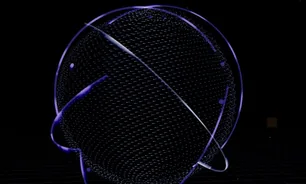
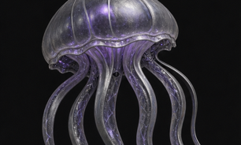
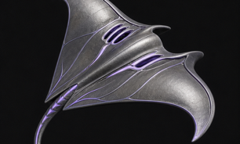

<!DOCTYPE html>
<!-- PRISM optimized web build with local hashed assets. Generated by design/beacon/build/build.mjs; DO NOT EDIT. -->

<html lang="en">
<head>
<meta charset="UTF-8" />
<meta name="prism-build-revision" content="4b96f68dcb6ffc742fcc2b5802411b2d334cbd692ef1a378bda1550b11074f3f">
<meta name="viewport" content="width=device-width, initial-scale=1.0" />
<!-- LINK_PREVIEW:START — build.py copies this block into the sub-1 MB Pages shell. -->
<title>PRISM</title>
<meta name="description" content="A VISUAL RENDER INSTRUMENT" />
<meta name="application-name" content="PRISM" />
<meta name="apple-mobile-web-app-title" content="PRISM" />
<meta name="theme-color" content="#07080b" />
<link rel="canonical" href="https://drewsully.github.io/prism/" />
<meta property="og:type" content="website" />
<meta property="og:locale" content="en_US" />
<meta property="og:site_name" content="PRISM" />
<meta property="og:title" content="PRISM" />
<meta property="og:description" content="A VISUAL RENDER INSTRUMENT" />
<meta property="og:url" content="https://drewsully.github.io/prism/" />
<meta property="og:image" content="https://drewsully.github.io/prism/og-prism.jpg?v=20260715" />
<meta property="og:image:secure_url" content="https://drewsully.github.io/prism/og-prism.jpg?v=20260715" />
<meta property="og:image:type" content="image/jpeg" />
<meta property="og:image:width" content="1200" />
<meta property="og:image:height" content="630" />
<meta property="og:image:alt" content="PRISM — A VISUAL RENDER INSTRUMENT" />
<meta name="twitter:card" content="summary_large_image" />
<meta name="twitter:title" content="PRISM" />
<meta name="twitter:description" content="A VISUAL RENDER INSTRUMENT" />
<meta name="twitter:url" content="https://drewsully.github.io/prism/" />
<meta name="twitter:domain" content="drewsully.github.io" />
<meta name="twitter:image" content="https://drewsully.github.io/prism/og-prism.jpg?v=20260715" />
<meta name="twitter:image:alt" content="PRISM — A VISUAL RENDER INSTRUMENT" />
<meta itemprop="name" content="PRISM" />
<meta itemprop="description" content="A VISUAL RENDER INSTRUMENT" />
<meta itemprop="image" content="https://drewsully.github.io/prism/og-prism.jpg?v=20260715" />
<link rel="icon" type="image/png" sizes="16x16" href="">
<link rel="icon" type="image/png" sizes="32x32" href="">
<!-- LINK_PREVIEW:END -->
<link rel="stylesheet" href="assets/prism-fonts-3RMSYUJM.css">
<script>(function(){function n(){if(!(window.__prismReady||document.getElementById("__prismBootErr"))){var e=document.createElement("div");e.id="__prismBootErr",e.style.cssText="position:fixed;inset:0;z-index:2147483647;display:flex;align-items:center;justify-content:center;background:#07080b;color:#e8e8ea;font:14px/1.6 ui-monospace,Menlo,monospace;text-align:center;padding:24px",e.innerHTML='<div>Prism didn’t finish loading.<br><span style="opacity:.65">A dependency or your browser’s storage may have blocked it. Try reloading, or use a recent Chrome/Edge.</span><br><br><button onclick="location.reload()" style="font:inherit;padding:8px 18px;border:1px solid #3a3a42;border-radius:0;background:#14141a;color:inherit;cursor:pointer">Reload</button></div>',(document.body||document.documentElement).appendChild(e)}}addEventListener("error",n),addEventListener("unhandledrejection",n)})();
</script>
<link rel="stylesheet" href="assets/prism-style-0-0b8c798a6fdc.css">
<script>(function(){document.documentElement.classList.add("is-booting"),document.addEventListener("DOMContentLoaded",function(){document.body.classList.add("is-booting")}),setTimeout(function(){document.documentElement.classList.remove("is-booting"),document.body&&(document.body.classList.remove("is-booting"),document.body.classList.add("boot-complete"))},800)})();
</script>
</head>
<body class="is-initial-look is-building-look" data-tab="presets">
<!-- Phase A — the 11.B mode strip is retired: a viewport-wide gradient
     hairline read as a rendering leak (spec §08), and Prism law keeps the
     chassis neutral. The --mode-accent on the active picker button stays. -->
<aside id="leftNav">
  <div class="brand" title="Prism">
      <!-- The outlined fw Push wordmark is the stable identity. Rendered
           materials normally belong on the stage and in Looks; the authored
           chrome hover logo is the deliberate interactive exception. -->
      <div class="brand-lockup">
        <canvas id="prismLogo" class="brand-logo" role="img" aria-label="PRISM" width="208" height="36"></canvas>
        <span class="brand-fallback" aria-hidden="true"><svg viewBox="0 0 97 17" fill="none" xmlns="http://www.w3.org/2000/svg" aria-label="PRISM"><path d="M-1.55605e-05 15.981V0.252003H12.2955C14.9625 0.252003 16.989 0.724502 18.2805 1.8795C19.6035 3.0555 19.929 4.6935 19.929 6.1845C19.929 7.7385 19.572 9.4185 18.2805 10.563C16.9785 11.697 14.8575 12.1905 12.285 12.1905H5.86948V15.981H-1.55605e-05ZM5.86948 7.896H11.823C12.474 7.896 12.9255 7.8015 13.272 7.6125C13.797 7.3185 13.986 6.8565 13.986 6.2685C13.986 5.6175 13.755 5.1555 13.251 4.8825C12.936 4.704 12.4845 4.6095 11.823 4.6095H5.86948V7.896ZM20.5398 15.981V0.241502H32.8353C35.5023 0.241502 37.5288 0.724502 38.8308 1.8795C40.1643 3.045 40.4688 4.6935 40.4688 5.943C40.4688 7.1925 40.1223 8.8725 38.8308 10.017C38.4633 10.3425 38.0223 10.605 37.5288 10.836L40.7838 15.981H34.3053L31.6173 11.6445H26.4093V15.981H20.5398ZM26.4093 7.665H32.3943C33.0663 7.665 33.4863 7.581 33.8328 7.392C34.3368 7.119 34.5258 6.699 34.5258 6.1425C34.5258 5.5335 34.2843 5.1135 33.8118 4.8615C33.4863 4.683 33.0768 4.5885 32.3943 4.5885H26.4093V7.665ZM41.2847 15.981V0.252003H47.1752V15.981H41.2847ZM58.0419 16.2435C53.4009 16.2435 50.2404 15.54 48.7494 13.86C48.1614 13.1985 47.7834 12.369 47.7834 10.92H54.2934C54.2934 11.4765 54.4299 11.844 54.8709 12.1485C55.4589 12.558 56.4039 12.7365 58.4199 12.7365C61.6119 12.7365 62.5149 12.285 62.5149 11.424C62.5149 10.353 61.2654 10.1535 56.5824 10.0275C51.8364 9.891 48.0774 9.072 48.0774 5.208C48.0774 1.365 51.8784 2.02656e-06 58.4304 2.02656e-06C63.2079 2.02656e-06 66.1479 0.714002 67.5129 2.3205C68.0274 2.9295 68.3214 3.612 68.3214 5.0085H61.8744C61.8744 4.452 61.7694 4.1265 61.3389 3.8535C60.8979 3.5595 60.0789 3.36 58.1049 3.36C55.1649 3.36 54.2829 3.759 54.2829 4.578C54.2829 5.565 55.5534 5.8275 60.5934 5.964C65.1399 6.09 68.7309 6.552 68.7309 10.5735C68.7309 14.4585 65.2029 16.2435 58.0419 16.2435ZM69.4033 15.981V0.252003H79.1473L82.8748 11.55L86.6023 0.252003H96.2413V15.981H90.5293L90.6238 3.612L86.3923 15.981H79.2313L75.0313 3.6015L75.1153 15.981H69.4033Z" fill="currentColor"/></svg></span>
      </div>
      <button id="navCollapse" type="button" aria-controls="leftNav" aria-expanded="true" aria-label="Hide panel" title="Hide panel (\)">
        <svg viewBox="0 0 16 16" aria-hidden="true" focusable="false"><path d="M10 3 L5 8 L10 13" fill="none" stroke="currentColor" stroke-width="1.6" stroke-linecap="round" stroke-linejoin="round"/></svg>
      </button>
    </div>
  <div class="nav-scroll">
  <div class="toolbar">
    <!-- Drew 2026-06-18 — Source bar: the entry point (load your artwork) leads the
         controls and stays visible on every tab. Primary actions only; the paste-SVG
         alternate + the advanced toggle live in the Lab "source" group below. -->
    <!-- Drew 2026-06-24 — both INPUTS (artwork + audio) live here at the top, always
         visible on every tab. Audio is fuel just like the image; loading it used to be
         buried two tabs deep in Motion. Tuning the reaction stays in Motion. -->
    <div class="source-bar">
      <div class="cat-label">Source</div>
      <div class="source-kind-switch" id="foregroundSourcePicker" role="radiogroup" aria-label="Foreground source">
        <button type="button" id="sourceArtwork" role="radio" aria-checked="true" tabindex="0" data-source="artwork">Artwork</button>
        <button type="button" id="sourceLivingForm" role="radio" aria-checked="false" tabindex="-1" data-source="living-form">Living Form</button>
      </div>
      <button class="btn" id="pick" style="margin-top:0" title="Open an SVG, PNG, JPG, or WebP from disk">
        <svg viewBox="0 0 14 14" fill="none" stroke="currentColor" stroke-width="1.3"><path d="M2 4a1 1 0 011-1h3l1.5 1.5H11a1 1 0 011 1v5a1 1 0 01-1 1H3a1 1 0 01-1-1V4z"/></svg>
        Open image…
      </button>
      <button type="button" class="living-form-browse" id="livingFormBrowse" aria-haspopup="dialog" aria-controls="livingFormDialog" title="Choose a Living Form foreground">
        
        <span class="living-form-browse-copy">
          <span class="living-form-browse-name" id="livingFormBrowseName">World</span>
          <span class="living-form-browse-label">Browse Living Forms</span>
        </span>
        <span class="living-form-browse-arrow" aria-hidden="true">›</span>
      </button>
      <button class="btn ghost" id="sourceAudioLoad" title="Load music — the render reacts to the beat (tune the reaction in Motion)">
        <svg viewBox="0 0 14 14" fill="none" stroke="currentColor" stroke-width="1.3"><path d="M5 3.5v6.2a1.6 1.6 0 11-1-1.48V3l5-1v5.7a1.6 1.6 0 11-1-1.48V2.2z"/></svg>
        Load audio…
      </button>
      <input type="file" id="mAudioFile" accept="audio/*" hidden />
      <span id="mAudioFilename" hidden>No audio loaded</span>
      <div class="source-audio-player" id="sourceAudioPlayer" data-state="paused" role="group" aria-label="Loaded track" hidden>
        <button type="button" class="source-audio-toggle" id="mAudioPlayBtn" disabled aria-label="Play loaded track" aria-pressed="false" title="Play loaded track">
          <svg class="icon-play" viewBox="0 0 16 16" aria-hidden="true"><path fill="currentColor" d="M4 2.75v10.5L13 8 4 2.75Z"/></svg>
          <svg class="icon-pause" viewBox="0 0 16 16" aria-hidden="true"><path fill="currentColor" d="M3.5 2.5h3v11h-3zm6 0h3v11h-3z"/></svg>
        </button>
        <div class="source-audio-copy">
          <div class="source-audio-ticker" id="sourceAudioTicker"><span id="sourceAudioTrackName">Audio</span></div>
          <div class="source-audio-meta" id="sourceAudioMeta">Ready</div>
        </div>
      </div>
      <input type="file" id="file" accept=".svg,image/svg+xml,image/png,image/jpeg,image/webp" hidden />
      <div class="source-audio-info" id="sourceAudioInfo"></div>
      <!-- Test-beat chips (Jul 4) — the listening kit's top three signals, surfaced
           at the entry point so hearing the render react is ONE user-initiated
           click (never autoplay). Hidden once a real track is loaded; the full
           five-signal kit stays in Motion → Audio reactivity. Same .test-sig-btn
           class = the Phase F1 delegated binding picks these up automatically. -->
      <div class="source-beat-row" id="sourceBeatRow">
        <span class="sbr-label">Test beats</span>
        <button type="button" class="btn ghost test-sig-btn" data-sig="kick120" title="120 BPM kick drum loop">Kick</button>
        <button type="button" class="btn ghost test-sig-btn" data-sig="backbeat" title="110 BPM 4/4 backbeat (kick / snare / hat)">Backbeat</button>
        <button type="button" class="btn ghost test-sig-btn" data-sig="hihat" title="240 BPM hi-hat sequence (8th notes @ 120)">Hi-hat</button>
      </div>
      <dialog class="living-form-dialog" id="livingFormDialog" aria-labelledby="livingFormDialogTitle">
        <div class="living-form-dialog-head">
          <h2 class="living-form-dialog-title" id="livingFormDialogTitle">Living Forms</h2>
          <button type="button" class="living-form-dialog-close" id="livingFormDialogClose" aria-label="Close Living Forms">×</button>
        </div>
        <div class="form-picker-grid" id="mGenFormBrowseGrid" role="radiogroup" aria-label="Living Forms">
          <button type="button" class="form-tile" role="radio" aria-checked="true" tabindex="0" data-form="world">
            <span class="form-thumb" aria-hidden="true"></span>
            <span class="form-tile-name">World</span>
          </button>
          <button type="button" class="form-tile" role="radio" aria-checked="false" tabindex="-1" data-form="jelly">
            <span class="form-thumb" aria-hidden="true"></span>
            <span class="form-tile-name">Jelly</span>
          </button>
          <button type="button" class="form-tile" role="radio" aria-checked="false" tabindex="-1" data-form="koi">
            <span class="form-thumb" aria-hidden="true"></span>
            <span class="form-tile-name">Koi</span>
          </button>
          <button type="button" class="form-tile" role="radio" aria-checked="false" tabindex="-1" data-form="manta">
            <span class="form-thumb" aria-hidden="true"></span>
            <span class="form-tile-name">Manta</span>
          </button>
          <button type="button" class="form-tile" role="radio" aria-checked="false" tabindex="-1" data-form="moth">
            <span class="form-thumb" aria-hidden="true"></span>
            <span class="form-tile-name">Luna</span>
          </button>
        </div>
      </dialog>
    </div>
      <div class="effects" id="effect" role="radiogroup" aria-label="Render mode">
      <!-- Sim category retired Jun 14 2026: the only effect ("Liquid") was a
           CPU softbody sim — nested-loop O(W*H) per frame, poor perf on big
           canvases. Pulse Mesh was already deprecated. -->
        <div class="effect-cat" data-effect-family="3d">
        <div class="cat-label">3D</div>
        <div class="effect-row">
          <button type="button" role="radio" aria-checked="true" tabindex="0" data-v="chrome" class="active" title="Chrome — mirror-bright metallic finish with sharp HDR reflections">
            <svg viewBox="0 0 16 16" fill="none" stroke="currentColor" stroke-width="1.4"><defs><clipPath id="chromeClip"><circle cx="8" cy="8" r="6"/></clipPath></defs><circle cx="8" cy="8" r="6" fill="currentColor" fill-opacity="0.18"/><circle cx="8" cy="8" r="6"/><rect x="2.5" y="5.4" width="11" height="0.9" fill="currentColor" stroke="none" opacity="0.9" clip-path="url(#chromeClip)"/></svg>
            <span>Chrome</span>
          </button>
          <button type="button" role="radio" aria-checked="false" tabindex="-1" data-v="glass" title="Glass — refractive transparent material with chromatic dispersion at edges">
            <svg viewBox="0 0 16 16" fill="none" stroke="currentColor" stroke-width="1.3"><rect x="4" y="2.5" width="8" height="11" rx="1" fill="currentColor" fill-opacity="0.12"/><rect x="4" y="2.5" width="8" height="11" rx="1"/><line x1="6" y1="4" x2="6" y2="12" opacity="0.45"/><line x1="10" y1="4" x2="10" y2="12" opacity="0.35"/><line x1="5" y1="5.5" x2="8" y2="5.5" opacity="0.9" stroke-width="1.5" stroke-linecap="round"/></svg>
            <span>Glass</span>
          </button>
        </div>
        <div class="effect-row">
          <button type="button" role="radio" aria-checked="false" tabindex="-1" data-v="holographic" title="Holographic — animated iridescent rainbow shift across the surface">
            <svg viewBox="0 0 16 16" fill="none" stroke="currentColor" stroke-width="1.5" stroke-linecap="round"><line x1="3" y1="11" x2="11" y2="3" opacity="0.95"/><line x1="4.5" y1="12.5" x2="12.5" y2="4.5" opacity="0.65"/><line x1="6" y1="14" x2="14" y2="6" opacity="0.35"/></svg>
            <span>Holographic</span>
          </button>
          <button type="button" role="radio" aria-checked="false" tabindex="-1" data-v="velvet" title="Velvet — soft fabric sheen with fuzzy silhouette halo">
            <svg viewBox="0 0 16 16" fill="none" stroke="currentColor"><circle cx="8" cy="8" r="6" opacity="0.25" stroke-width="1.8"/><circle cx="8" cy="8" r="4" opacity="0.55" stroke-width="1.5"/><circle cx="8" cy="8" r="2" opacity="0.9" stroke-width="1.2"/></svg>
            <span>Velvet</span>
          </button>
        </div>
        <div class="effect-row">
          <button type="button" role="radio" aria-checked="false" tabindex="-1" data-v="network" title="Mesh — a dynamic connected network (faceted wireframe / drifting plexus) that forms your shape; audio-reactive, customizable vertices, lines, color, glow, drift">
            <svg viewBox="0 0 16 16" fill="none" stroke="currentColor" stroke-width="1.1" stroke-linejoin="round" stroke-linecap="round"><path d="M4 5 L8 2.6 L12 6 L10 11 L5 10 Z" opacity="0.45"/><path d="M4 5 L10 11 M8 2.6 L5 10 M12 6 L5 10" opacity="0.8"/><circle cx="4" cy="5" r="1.15" fill="currentColor" stroke="none"/><circle cx="8" cy="2.6" r="1.15" fill="currentColor" stroke="none"/><circle cx="12" cy="6" r="1.15" fill="currentColor" stroke="none"/><circle cx="10" cy="11" r="1.15" fill="currentColor" stroke="none"/><circle cx="5" cy="10" r="1.15" fill="currentColor" stroke="none"/></svg>
            <span>Mesh</span>
          </button>
          <button type="button" role="radio" aria-checked="false" tabindex="-1" data-v="inflate" title="Inflate — soft puffed vinyl balloon; the form rounds out in 3D (the only mode that reshapes the silhouette)">
            <svg viewBox="0 0 16 16" fill="none" stroke="currentColor" stroke-width="1.3" stroke-linejoin="round" stroke-linecap="round"><path d="M8 2.4c3 0 5 2.2 5 4.9 0 2.7-2.2 4.5-5 4.5S3 10 3 7.3C3 4.6 5 2.4 8 2.4z" fill="currentColor" fill-opacity="0.18"/><path d="M8 2.4c3 0 5 2.2 5 4.9 0 2.7-2.2 4.5-5 4.5S3 10 3 7.3C3 4.6 5 2.4 8 2.4z"/><path d="M7 11.8l1 1.8 1-1.8" opacity="0.85"/><path d="M6 6c.7-.9 2.3-.9 3 .1" opacity="0.6"/></svg>
            <span>Inflate</span>
          </button>
          <!-- Phase A — Liquid Glass merged into Glass: the "form (solid → liquid)"
               slider inside Glass mode carries its whole character. -->
        </div>
        <!-- Hidden state bindings retained for v1/import compatibility. -->
        <div class="gen-block compat-form-bindings" id="genBlock" hidden aria-hidden="true">
          <div class="gen-form-rail">
            <label class="check" style="margin:0" title="Render the selected authored form and let music articulate its construction.">
              <input type="checkbox" id="mGenToggle" tabindex="-1" /> Living Form</label>
            <select id="mGenFormSelect" aria-label="Living Form" tabindex="-1">
              <option value="world">World</option>
              <option value="jelly">Jelly</option>
              <option value="koi">Koi</option>
              <option value="manta">Manta</option>
              <option value="moth">Luna</option>
            </select>
          </div>
        </div>
      </div>
        <div class="effect-cat" data-effect-family="dither">
        <div class="cat-label">Dither</div>
        <div class="effect-row">
          <button type="button" role="radio" aria-checked="false" tabindex="-1" data-v="halftone" title="Halftone — dot-pattern dithering using shape and size to render tone">
            <svg viewBox="0 0 16 16" fill="none" stroke="currentColor" stroke-width="1.4"><circle cx="4" cy="4" r="2.2"/><circle cx="12" cy="4" r="1.4"/><circle cx="4" cy="12" r="1.4"/><circle cx="12" cy="12" r="2.2"/><circle cx="8" cy="8" r="0.8" fill="currentColor"/></svg>
            <span>Halftone</span>
          </button>
          <button type="button" role="radio" aria-checked="false" tabindex="-1" data-v="bayer" title="Ordered (Bayer) — threshold matrix dithering for crisp retro patterns">
            <svg viewBox="0 0 16 16" fill="none" stroke="currentColor" stroke-width="1.4"><rect x="2" y="2" width="3" height="3" fill="currentColor"/><rect x="7" y="2" width="3" height="3"/><rect x="11" y="2" width="3" height="3" fill="currentColor"/><rect x="2" y="7" width="3" height="3"/><rect x="7" y="7" width="3" height="3" fill="currentColor"/><rect x="11" y="7" width="3" height="3"/><rect x="2" y="11" width="3" height="3" fill="currentColor"/><rect x="7" y="11" width="3" height="3"/><rect x="11" y="11" width="3" height="3" fill="currentColor"/></svg>
            <span>Ordered</span>
          </button>
          <button type="button" role="radio" aria-checked="false" tabindex="-1" data-v="stipple" title="Stipple — randomly placed dots whose density follows tone">
            <svg viewBox="0 0 16 16" fill="currentColor"><circle cx="3" cy="3" r="0.9"/><circle cx="8" cy="2.5" r="0.7"/><circle cx="13" cy="4" r="0.9"/><circle cx="5" cy="7" r="0.7"/><circle cx="11" cy="6.5" r="1"/><circle cx="2.5" cy="11" r="0.9"/><circle cx="7" cy="11.5" r="0.7"/><circle cx="12.5" cy="11" r="1"/><circle cx="9" cy="8.5" r="0.6"/></svg>
            <span>Stipple</span>
          </button>
          <button type="button" role="radio" aria-checked="false" tabindex="-1" data-v="ascii" title="ASCII — text-character dithering using a luminance ramp">
            <svg viewBox="0 0 16 16" fill="none" stroke="currentColor" stroke-width="1.3" font-family="monospace" font-size="6"><text x="2" y="6" fill="currentColor" stroke="none">.:-</text><text x="2" y="13" fill="currentColor" stroke="none">+#@</text></svg>
            <span>ASCII</span>
          </button>
        </div>
        <div class="effect-row">
          <button type="button" role="radio" aria-checked="false" tabindex="-1" data-v="atkinson" title="Atkinson — 1-bit error diffusion. The Mac Classic grain: sparse, organic, distinctive">
            <svg viewBox="0 0 16 16" fill="currentColor"><rect x="2" y="2" width="1.6" height="1.6"/><rect x="5.5" y="3.5" width="1.6" height="1.6"/><rect x="9" y="2" width="1.6" height="1.6"/><rect x="12.5" y="3.5" width="1.6" height="1.6"/><rect x="3.5" y="6" width="1.6" height="1.6"/><rect x="7.5" y="7" width="1.6" height="1.6"/><rect x="11" y="5.5" width="1.6" height="1.6"/><rect x="2" y="10" width="1.6" height="1.6"/><rect x="6" y="10.5" width="1.6" height="1.6"/><rect x="9.5" y="11" width="1.6" height="1.6"/><rect x="12.5" y="9.5" width="1.6" height="1.6"/></svg>
            <span>Atkinson</span>
          </button>
          <button type="button" role="radio" aria-checked="false" tabindex="-1" data-v="floyd" title="Floyd-Steinberg — 1-bit error diffusion with 7/16, 3/16, 5/16, 1/16 distribution. Sharper than Atkinson">
            <svg viewBox="0 0 16 16" fill="currentColor"><rect x="2" y="2" width="1.8" height="1.8"/><rect x="6" y="2" width="1.8" height="1.8"/><rect x="10" y="2" width="1.8" height="1.8"/><rect x="4" y="6" width="1.8" height="1.8"/><rect x="8" y="6" width="1.8" height="1.8"/><rect x="12" y="6" width="1.8" height="1.8"/><rect x="2" y="10" width="1.8" height="1.8"/><rect x="6" y="10" width="1.8" height="1.8"/><rect x="10" y="10" width="1.8" height="1.8"/></svg>
            <span>Floyd</span>
          </button>
        </div>
      </div>
    </div>
  </div>
    <div class="tabs" id="tabs" role="tablist" aria-label="Editor sections">
      <button id="tab-presets" data-tab-trigger="presets" class="active" role="tab" aria-selected="true" aria-controls="editorPanel">Looks</button>
      <button id="tab-look" data-tab-trigger="look" role="tab" aria-selected="false" aria-controls="editorPanel">Lab</button>
      <button id="tab-motion" data-tab-trigger="motion" role="tab" aria-selected="false" aria-controls="editorPanel">Motion</button>
      <button id="tab-output" data-tab-trigger="output" role="tab" aria-selected="false" aria-controls="editorPanel">Export</button>
    </div>

    <div class="tab-content" id="editorPanel" role="tabpanel" aria-labelledby="tab-presets">

    <!-- =================== LOOK TAB =================== -->

    <!-- Phase B — LOOKS: curated specimen starting points (spec §06). Every
         Look = an effect + a recipe applied through the normal preset path;
         the knobs stay live — a Look is a starting point, not a cage. -->
    <fieldset data-tab="presets" class="looks-hero">
      <legend>looks gallery</legend>
      <div class="active-form-badge" id="activeLivingFormBadge" role="status" aria-live="polite" aria-atomic="true" hidden>
        Living Form · <strong id="activeLivingFormBadgeName">World</strong>
      </div>
      <div class="look-tools" aria-label="Look edit history">
        <div class="look-state-label" id="lookStateLabel"><strong>Signal</strong></div>
        <div class="look-tool-actions">
          <button class="btn ghost" id="lookUndo" type="button" disabled aria-label="Undo last edit" title="Undo (⌘Z / Ctrl+Z)">↶</button>
          <button class="btn ghost" id="lookRedo" type="button" disabled aria-label="Redo last edit" title="Redo (⇧⌘Z / Ctrl+Y)">↷</button>
          <button class="btn ghost" id="lookRevert" type="button" disabled title="Restore the active Look's authored settings">Revert</button>
        </div>
      </div>
      <div id="looksGrid"></div>
    </fieldset>

    <!-- Canonical foreground / background tint pickers — route to the right
         engine knob based on the active material AND bg mode. Lives at the top
         of the Lab tab so editing a Look's colours is always one obvious move.
         The per-knob power-user pickers stay in deeper groups below. -->
    <fieldset data-tab="look" data-fx="metal" id="fgBgTintFieldset">
      <legend>foreground / background tint</legend>
      <div class="two">
        <div class="inline-color">
          <label for="fgTint" id="fgTintLabel" title="Routes to the knob that paints the foreground material — material-aware">foreground</label>
          <input type="color" id="fgTint" value="#cccccc" title="Tints the foreground material per active mode (chrome/glass/velvet/plasma → base color; holographic → grade highlight)" />
        </div>
        <div class="inline-color">
          <label for="bgTint" id="bgTintLabel" title="Routes to the knob that paints the active background mode">background</label>
          <input type="color" id="bgTint" value="#0a0c10" title="Tints the active background mode's primary colour slot" />
        </div>
      </div>
    </fieldset>

    <!-- Drew 2026-06-18 — the primary source actions (Open image / Sample) moved up
         to the persistent .source-bar. What remains here: the global advanced toggle
         (kept inside a fieldset so it doesn't read as orphaned UI) + the secondary
         paste-markup input, folded into a disclosure so it stays out of the way. -->
    <fieldset data-tab="look">
      <legend>source</legend>
      <label class="check" style="margin: 0 0 8px;"><input type="checkbox" id="mShowAdvanced" /> show advanced controls</label>
      <details class="src-paste">
        <summary>paste SVG markup</summary>
        <textarea id="paste" rows="2" placeholder="<svg ...>" style="margin-top:6px"></textarea>
        <button class="btn ghost" id="loadPaste" title="Render the SVG markup above">Load pasted</button>
      </details>
    </fieldset>

    <!-- per-effect param panels -->
    <fieldset data-fx="halftone" data-tab="look">
      <legend>halftone</legend>
      <label>dot shape</label>
      <select id="shape" title="Geometry rendered at each cell"><option>circle</option><option>square</option><option>diamond</option><option>cross</option><option>line</option></select>
      <label>max dot size <span class="val" id="dotMaxV"></span></label>
      <input type="range" id="dotMax" min="20" max="100" value="62" title="Largest dot diameter as a percentage of the cell" />
      <label>min cutoff <span class="val" id="dotMinV"></span></label>
      <input type="range" id="dotMin" min="0" max="50" value="6" title="Suppress dots smaller than this — keeps highlights clean" />
      <label>dot gain <span class="val" id="gainV"></span></label>
      <input type="range" id="gain" min="20" max="300" value="100" title="Tone curve applied to dot size — &lt;100 darker, &gt;100 lifted" />
      <label>screen angle <span class="val" id="angleV"></span></label>
      <input type="range" id="angle" min="0" max="90" value="0" title="Rotate the dot lattice (15°/45° = classic offset look)" />
    </fieldset>

    <fieldset data-fx="bayer" data-tab="look">
      <legend>ordered dither</legend>
      <label>matrix size</label>
      <select id="matrix" title="Bayer threshold matrix — larger = more tonal steps, finer texture"><option value="2">2 × 2</option><option value="4">4 × 4</option><option value="8" selected>8 × 8</option></select>
      <label>threshold bias <span class="val" id="biasV"></span></label>
      <input type="range" id="bias" min="-50" max="50" value="0" title="Shift the threshold — negative darkens, positive brightens the result" />
      <label>pixel gap <span class="val" id="gapV"></span></label>
      <input type="range" id="gap" min="0" max="80" value="8" title="Space between rendered pixels (0 = solid, higher = grid feel)" />
    </fieldset>

    <fieldset data-fx="stipple" data-tab="look">
      <legend>stipple</legend>
      <label>density <span class="val" id="densV"></span></label>
      <input type="range" id="dens" min="10" max="100" value="60" title="Overall dot population per cell" />
      <label>jitter <span class="val" id="jitV"></span></label>
      <input type="range" id="jit" min="0" max="100" value="50" title="Random position offset — 0 = grid, 100 = chaotic" />
      <label>size variance <span class="val" id="varV"></span></label>
      <input type="range" id="var" min="0" max="100" value="60" title="Random size spread between dots" />
      <label>dot radius <span class="val" id="sradV"></span></label>
      <input type="range" id="srad" min="10" max="100" value="40" title="Base radius of each dot before variance" />
    </fieldset>

    <fieldset data-fx="ascii" data-tab="look">
      <legend>ascii</legend>
      <label>character set</label>
      <select id="asciiPreset" title="Pick a ready-made character ramp — or type your own below">
        <option value="custom">— custom —</option>
        <option value="classic">classic</option>
        <option value="soft">soft</option>
        <option value="detailed">detailed (70 chars)</option>
        <option value="minimal">minimal</option>
        <option value="blocks">blocks ░▒▓█</option>
        <option value="dots">dots</option>
        <option value="terminal">terminal</option>
        <option value="onebit">1-bit █</option>
      </select>
      <label>ramp</label>
      <input type="text" id="ramp" value=" .:-=+*#%@" title="Characters mapped to tone, darkest first" />
      <label class="check"><input type="checkbox" id="asciiReverse" /> reverse ramp (light→dark)</label>
      <label>char size <span class="val" id="asciiCellV"></span></label>
      <input type="range" id="asciiCell" min="3" max="48" value="6" title="Pixel size of each character cell — lower = more characters, finer detail" />
      <label>char aspect <span class="val" id="aspV"></span></label>
      <input type="range" id="asp" min="50" max="200" value="100" title="Vertical stretch — 100 keeps the art's true proportions, higher makes it taller" />
      <label>row spacing <span class="val" id="asciiLineHV"></span></label>
      <input type="range" id="asciiLineH" min="100" max="180" value="100" title="Vertical gap between rows — 100 = tight (no gaps), higher = airier" />
      <label class="check" id="asciiColorRow"><input type="checkbox" id="asciiColor" /> color by tone (ink→ink2)</label>
      <label class="check"><input type="checkbox" id="asciiBold" /> bold</label>
    </fieldset>

    <fieldset data-fx="atkinson floyd" data-tab="look">
      <legend>error diffusion</legend>
      <label>ink threshold <span class="val" id="ditherThreshV"></span></label>
      <input type="range" id="ditherThresh" min="0" max="100" value="50" title="Tone level where a pixel flips to ink. Lower = more ink (darker); higher = sparser. The diffusion redistributes the rounding error either way." />
      <label>diffusion strength <span class="val" id="ditherDiffuseV"></span></label>
      <input type="range" id="ditherDiffuse" min="0" max="100" value="100" title="How much of each pixel's rounding error spreads to its neighbours. 100 = classic dither grain; 0 = hard 1-bit threshold (blocky, high-contrast); in between dials the texture." />
    </fieldset>

    <!-- "Liquid sonar" params fieldset retired Jun 14 2026 — see effect-cat above. -->

    <!-- ── Mesh network render controls (Lab tab) ── -->
    <fieldset data-fx="network" data-tab="look">
      <legend>mesh network</legend>
      <div class="group">
        <div class="group-title">Network</div>
        <label for="mNetMode">connection mode</label>
        <select id="mNetMode">
          <option value="faceted">faceted (triangulated)</option>
          <option value="plexus">plexus (drifting web)</option>
        </select>
        <label>vertex density <span class="val" id="mNetVertexDensityV"></span></label>
        <input type="range" id="mNetVertexDensity" min="0" max="1" step="0.01" value="0.5" title="How many points the network is built from. More = denser, finer facets; fewer = bolder, sparser. Rebuilds the network." />
        <label>line density <span class="val" id="mNetEdgeDensityV"></span></label>
        <input type="range" id="mNetEdgeDensity" min="0" max="1" step="0.01" value="1" title="Line density — fraction of wireframe edges kept (the bold silhouette always stays). 1 = full mesh; lower = sparser. Rebuilds." />
        <div class="inline-color">
          <label for="mNetColor">edge color</label>
          <input type="color" id="mNetColor" value="#3be07a" title="Color of the network lines." />
        </div>
        <div class="inline-color">
          <label for="mNetAccent">node / accent</label>
          <input type="color" id="mNetAccent" value="#8bffc0" title="Color of the vertex nodes + the depth gradient + the bold outline." />
        </div>
        <label>glow <span class="val" id="mNetGlowV"></span></label>
        <input type="range" id="mNetGlow" min="0" max="2" step="0.01" value="0.45" title="Brightness of the lines + nodes; also feeds the bloom halo." />
        <label>3D depth / volume <span class="val" id="mNetDepthV"></span></label>
        <input type="range" id="mNetDepth" min="0" max="2" step="0.01" value="0.9" title="How deep / voluminous the form is in 3D. Faceted = a closed front+back shell; plexus = a filled volume. Higher = more body (front and back layers separate more, reads 3D even head-on). Tumbles under rotation. Rebuilds." />
        <label for="mNetNodeShape">vertex shape</label>
        <select id="mNetNodeShape">
          <option value="0">dot</option>
          <option value="1">ring</option>
          <option value="2">square</option>
          <option value="3">diamond</option>
          <option value="4">cross</option>
          <option value="5">triangle</option>
          <option value="6">star</option>
          <option value="7">hexagon</option>
          <option value="8">sparkle</option>
        </select>
        <label>vertex size <span class="val" id="mNetNodeSizeV"></span></label>
        <input type="range" id="mNetNodeSize" min="0" max="4" step="0.05" value="1" title="Size of the vertex glyphs. 0 = lines only (pure wireframe)." />
      </div>
      <div class="group adv">
        <div class="group-title">Network — fine</div>
        <label>vertex size variation <span class="val" id="mNetNodeVaryV"></span></label>
        <input type="range" id="mNetNodeVary" min="0" max="1" step="0.01" value="0.3" title="Randomizes vertex glyph size for an organic, hand-built feel. 0 = uniform." />
        <label>vertex jitter <span class="val" id="mNetJitterV"></span></label>
        <input type="range" id="mNetJitter" min="0" max="1" step="0.01" value="0.15" title="Random offset on vertex positions — breaks the even grid for a more organic, irregular network. Rebuilds." />
        <label>line opacity <span class="val" id="mNetLineOpacityV"></span></label>
        <input type="range" id="mNetLineOpacity" min="0" max="1" step="0.01" value="1" title="Opacity of the connecting lines. Lower = nodes dominate; 0 = nodes only." />
        <label>back dome <span class="val" id="mNetBackDomeV"></span></label>
        <input type="range" id="mNetBackDome" min="0" max="1" step="0.01" value="0.5" title="How far the form domes BACKWARD vs forward — 0 = a flat relief (front only), 1 = a symmetric closed 3D shell. Rebuilds." />
        <label>depth color blend <span class="val" id="mNetDepthTintV"></span></label>
        <input type="range" id="mNetDepthTint" min="0" max="1" step="0.01" value="0.4" title="Tints interior (domed) edges toward the accent color for dimensional shading. 0 = single color." />
        <label>band tint <span class="val" id="mNetBandTintV"></span></label>
        <input type="range" id="mNetBandTint" min="0" max="1" step="0.01" value="0.2" title="Subtly tints edges by their audio band (bass/mid/treble). Low by default to keep the clean look." />
        <label>hue drift <span class="val" id="mNetHueDriftV"></span></label>
        <input type="range" id="mNetHueDrift" min="0" max="1" step="0.01" value="0" title="Slowly rotates the whole palette through the spectrum. 0 = stable color (default)." />
      </div>
    </fieldset>

    <fieldset data-fx="metal" data-tab="look">
      <legend>3D studio</legend>
      <!-- Phase A — hero/advanced: ~120 flat controls became a hero panel;
           the long tail lives behind the global "show advanced" toggle at the
           top of the Lab tab (spec §08 S2 — now shared across all effects). -->
      <!-- Promoted background mode chip row — bg is one of the most expressive
           dials in the 3D rig but used to be buried inside a sub-group. Lives
           at the top of the 3D fieldset now. The real <select id="mBgMode">
           below stays as the state binding; these chips drive it. -->
      <div class="cat-label studio-picker-label">Background</div>
      <label for="mBgTreatment">authored treatment</label>
      <select id="mBgTreatment" title="Apply only the background and scene treatment from a Look; the current foreground stays intact">
        <option value="custom" selected>Custom</option>
      </select>
      <div class="row-note">Look backgrounds, available independently from their foreground material.</div>
        <div class="bg-chips" id="bgChipRow" role="radiogroup" aria-label="background mode">
          <button type="button" data-bg="off"          class="bg-chip">off</button>
        <button type="button" data-bg="studiodrift"  class="bg-chip">studio drift</button>
        <button type="button" data-bg="milkdrop"     class="bg-chip">milkdrop</button>
        <button type="button" data-bg="liquidmetal"  class="bg-chip">liquid metal</button>
        <button type="button" data-bg="liquidsurface" class="bg-chip">liquid surface</button>
        <button type="button" data-bg="plasma"       class="bg-chip">plasma flow</button>
        <button type="button" data-bg="retrobroadcast" class="bg-chip">retro broadcast</button>
        <button type="button" data-bg="vortex"       class="bg-chip">vortex</button>
        <button type="button" data-bg="blackhole"    class="bg-chip">blackhole</button>
        <button type="button" data-bg="bigsur"       class="bg-chip">big sur</button>
        <button type="button" data-bg="mesh"         class="bg-chip">plexus</button>
        <button type="button" data-bg="particles"    class="bg-chip">particles</button>
        <button type="button" data-bg="solid"        class="bg-chip">solid</button>
      </div>
      <details class="lab-section" open data-sec="foreground">
        <summary>Foreground (form &amp; material)</summary>
      <div class="group">
        <div class="group-title">Extrusion</div>
        <label>depth</label>
        <input type="range" id="mDepth" min="1" max="36" step="1" value="18" title="Bar thickness along z" />
        <label>bevel size</label>
        <input type="range" id="mBevelSize" min="0" max="8" step="0.1" value="2" title="Front/back edge radius — set to 0 to disable bevel" />
        <label>bevel thickness</label>
        <input type="range" id="mBevelThick" min="0" max="6" step="0.1" value="2.5" title="How far the bevel extends inward from each face" />
        <label>bevel segments</label>
        <input type="range" id="mBevelSeg" min="1" max="12" step="1" value="10" title="Bevel smoothness — higher = rounder corners. 10+ recommended for circle shapes to render perfectly round." />
      </div>
      <div class="group" id="mGenRow">
        <div class="group-title">Living Forms</div>
        <!-- The source on/off lives in the header Source control now; this
             select stays as the state binding (header drives it). -->
        <div id="mGenModeRow" hidden>
          <label style="display:none">render</label>
          <select id="mGenMode" style="display:none" title="Choose whether PRISM renders the loaded artwork or the selected Living Form.">
            <option value="off">off (use loaded SVG / image)</option>
            <option value="blob">audio blob (3D form, dances to the music)</option>
          </select>
        </div>
        <!-- Compatibility binding: imports and the renderer still consume
             mGenShape, but legacy primitives are not advertised. -->
        <select id="mGenShape" hidden aria-hidden="true" tabindex="-1">
          <option value="world">World</option><option value="geode">Geode</option><option value="aperture">Aperture</option>
          <option value="jelly">Jelly</option><option value="koi">Koi</option><option value="manta">Manta</option>
          <option value="moth">Luna</option><option value="section">Section</option><option value="tension">Tension</option>
          <option value="bloom">Bloom</option><option value="blob">Legacy orb</option><option value="torus">Legacy ring</option>
          <option value="knot">Legacy knot</option><option value="crown">Legacy crown</option><option value="tide">Legacy tide</option><option value="dragon">Legacy dragon</option>
          <option value="vessel">Legacy vessel</option><option value="spine">Legacy spine</option><option value="relay">Legacy relay</option>
        </select>

        <div class="form-picker-grid" id="mGenFormGrid" role="radiogroup" aria-label="Living Forms">
          <button type="button" class="form-tile" role="radio" aria-checked="true" tabindex="0" data-form="world">
            <span class="form-thumb" aria-hidden="true"></span>
            <span class="form-tile-name">World</span>
          </button>
          <button type="button" class="form-tile" role="radio" aria-checked="false" tabindex="-1" data-form="jelly">
            <span class="form-thumb" aria-hidden="true"></span>
            <span class="form-tile-name">Jelly</span>
          </button>
          <button type="button" class="form-tile" role="radio" aria-checked="false" tabindex="-1" data-form="koi">
            <span class="form-thumb" aria-hidden="true"></span>
            <span class="form-tile-name">Koi</span>
          </button>
          <button type="button" class="form-tile" role="radio" aria-checked="false" tabindex="-1" data-form="manta">
            <span class="form-thumb" aria-hidden="true"></span>
            <span class="form-tile-name">Manta</span>
          </button>
          <button type="button" class="form-tile" role="radio" aria-checked="false" tabindex="-1" data-form="moth">
            <span class="form-thumb" aria-hidden="true"></span>
            <span class="form-tile-name">Luna</span>
          </button>
        </div>
        <div class="form-picker-tools"><button type="button" class="btn ghost" id="mGenFormReset">Reset form</button></div>
        <div class="visually-hidden" id="mGenFormStatus" role="status" aria-live="polite" aria-atomic="true"></div>

        <details class="form-advanced" id="mGenFormAdvanced">
          <summary id="mGenFormAdvancedSummary">Advanced — World</summary>
          <div class="form-param-set" data-form-controls="world">
            <label>particle density</label><input type="range" id="mGenParam-world-particleDensity" data-form-param="particleDensity" min="0.25" max="1" step="0.01" value="0.72" />
            <label>shedding spread</label><input type="range" id="mGenParam-world-sheddingSpread" data-form-param="sheddingSpread" min="0" max="1" step="0.01" value="0.38" />
            <label>route density</label><input type="range" id="mGenParam-world-routeDensity" data-form-param="routeDensity" min="0" max="1" step="0.01" value="0.42" />
          </div>
          <div class="form-param-set" data-form-controls="jelly" hidden>
            <label>bell compression</label><input type="range" id="mGenParam-jelly-bellCompression" data-form-param="bellCompression" min="0.15" max="1" step="0.01" value="0.62" />
            <label>tentacle spread</label><input type="range" id="mGenParam-jelly-tentacleSpread" data-form-param="tentacleSpread" min="0.1" max="1" step="0.01" value="0.58" />
            <label>drift bias</label><input type="range" id="mGenParam-jelly-driftBias" data-form-param="driftBias" min="-0.5" max="0.5" step="0.01" value="0.08" />
          </div>
          <div class="form-param-set" data-form-controls="koi" hidden>
            <label>body curve</label><input type="range" id="mGenParam-koi-bodyCurve" data-form-param="bodyCurve" min="0.15" max="1" step="0.01" value="0.62" />
            <label>fin spread</label><input type="range" id="mGenParam-koi-finSpread" data-form-param="finSpread" min="0.1" max="1" step="0.01" value="0.52" />
            <label>tail sweep</label><input type="range" id="mGenParam-koi-tailSweep" data-form-param="tailSweep" min="0.1" max="1" step="0.01" value="0.68" />
          </div>
          <div class="form-param-set" data-form-controls="manta" hidden>
            <label>wing span</label><input type="range" id="mGenParam-manta-wingSpan" data-form-param="wingSpan" min="0.5" max="1.2" step="0.01" value="0.9" />
            <label>wing curl</label><input type="range" id="mGenParam-manta-wingCurl" data-form-param="wingCurl" min="0.1" max="1" step="0.01" value="0.5" />
            <label>tail length</label><input type="range" id="mGenParam-manta-tailLength" data-form-param="tailLength" min="0.3" max="1" step="0.01" value="0.68" />
          </div>
          <div class="form-param-set" data-form-controls="moth" hidden>
            <label>wing opening</label><input type="range" id="mGenParam-moth-wingOpen" data-form-param="wingOpen" min="0.35" max="1" step="0.01" value="0.78" />
            <label>tail length</label><input type="range" id="mGenParam-moth-tailLength" data-form-param="tailLength" min="0.2" max="1" step="0.01" value="0.7" />
            <label>vein density</label><input type="range" id="mGenParam-moth-veinDensity" data-form-param="veinDensity" min="0.25" max="1" step="0.01" value="0.62" />
          </div>
          <div id="mGenDetailControls">
            <label>detail</label><input type="range" id="mGenSegs" min="32" max="280" step="8" value="200" title="Geometry detail, capped by the selected form's vertex budget." />
          </div>
        </details>

        <details class="form-advanced" id="mGenLegacyAdvanced" hidden>
          <summary>Legacy advanced</summary>
          <p class="row-note">Compatibility controls retained for imported legacy forms.</p>
        <label title="How far the form abstracts away from a sphere into the superformula shape. 0 = plain sphere, higher = stronger lobes/spikes.">abstraction</label>
        <input type="range" id="mGenSuperAmt" min="0" max="1.2" step="0.02" value="0" title="Blend from a plain sphere (0) toward the full superformula form. The beat can push this further (see 'beat → abstraction')." />
        <label title="Superformula symmetry — how many lobes / points the form has.">symmetry / lobes</label>
        <input type="range" id="mGenSuperM" min="0" max="20" step="1" value="6" title="Number of lobes/points around the form (the superformula 'm'). Low = few big lobes, high = many points. The beat can shift this live." />
        <label title="Spikiness — lower = sharp spikes, higher = round bulges.">spike ↔ round</label>
        <input type="range" id="mGenSuperN1" min="0.25" max="3" step="0.05" value="1" title="Overall sharpness (superformula n1). Low = sharp spikes/points, high = soft round bulges." />
        <label title="Shoulder shaping — fine-tunes how the lobes flare (superformula n2).">lobe flare</label>
        <input type="range" id="mGenSuperN2" min="0.25" max="3" step="0.05" value="1" title="Shapes the lobe shoulders (superformula n2). Try with symmetry + spike for stars vs gems vs flowers." />
        <label title="Second shoulder term — asymmetric with lobe flare gives more exotic forms (superformula n3).">lobe twist</label>
        <input type="range" id="mGenSuperN3" min="0.25" max="3" step="0.05" value="1" title="Second shoulder term (superformula n3). Set different from 'lobe flare' for asymmetric, exotic forms." />
        <label>flow speed</label>
        <input type="range" id="mGenFlow" min="0" max="2" step="0.05" value="0.25" title="How fast the surface flows on its own (idle drift). 0 = frozen between beats, higher = constant churning motion. (Generative source only.)" />
        <label>noise scale</label>
        <input type="range" id="mGenScale" min="0.02" max="0.3" step="0.01" value="0.12" title="Big rolling lobes (low) vs smaller ripples (high). Capped to the range that stays smooth — finer than this undersamples the mesh into facets. (Generative source only.)" />
        <label>surface detail</label>
        <input type="range" id="mGenOctaves" min="1" max="4" step="1" value="1" title="How many layers of noise — fewer = smooth, simple, liquid; more = more surface detail (kept within the smooth range). (Generative source only.)" />
        <label>fluid warp</label>
        <input type="range" id="mGenWarp" min="0" max="2.5" step="0.05" value="0.8" title="Folds the flow in on itself so the surface churns and curls like real liquid, instead of a fixed pattern sliding past. 0 = the old conveyor-belt motion, higher = turbulent fluid. (Generative source only.)" />
        <label>giant lobes</label>
        <input type="range" id="mGenMacro" min="0" max="6" step="0.1" value="2.5" title="A few huge slow swells that reshape the whole silhouette — a formless mass, not a textured ball. 0 = stays spherical, higher = the outline morphs dramatically. (Generative source only.)" />
        <label>spin</label>
        <input type="range" id="mGenSpin" min="0" max="2" step="0.05" value="0" title="Slow auto-rotation of the form itself. 0 = no spin. (Generative source only.)" />
        <label>drift</label>
        <input type="range" id="mGenSway" min="0" max="1" step="0.05" value="0.4" title="The whole form slowly drifts, dips in depth, and leans — so it reads as a formless shape dancing through the void. Pairs with a dark forward-pulling backdrop (the Abyss look). 0 = centred and still. (Generative source only.)" />
        <label>symmetry / fold</label>
        <input type="range" id="mGenSymmetry" min="0" max="6" step="1" value="0" title="Kaleidoscopic radial mirroring of the surface pattern. 0 = off, 2–6 = N-fold symmetry. (Generative source only.)" />
        </details>
      </div>
      <div class="group" id="mReliefRow">
        <div class="group-title">Raster relief (image source)</div>
        <label>mode</label>
        <select id="mReliefMode" title="How a loaded raster image renders in 3D. Relief = a flat slab textured with the image (G1). Silhouette = trace the image's silhouette and extrude it into chrome geometry like an SVG (G6) — best for logos, icons, anything with a clean foreground vs background.">
          <option value="relief">relief (textured slab)</option>
          <option value="silhouette">silhouette (extruded shape)</option>
        </select>
        <label>silhouette threshold</label>
        <input type="range" id="mSilhouetteThreshold" min="0.05" max="0.95" step="0.01" value="0.5" title="Threshold for the silhouette trace. For PNGs with transparency this is the alpha cut-off (low = bigger silhouette, includes faint edges; high = tighter to the opaque core). For opaque images it's the luminance ceiling for foreground (dark pixels below this become the extruded shape)." />
        <label>relief height</label>
        <input type="range" id="mReliefHeight" min="0" max="8" step="0.1" value="0" title="Heightfield displacement on the slab's front face — bright pixels push out, dark pixels sink in. 0 = clean slab (default), 1+ = topographic relief. (Relief mode only.)" />
        <label>front-face segments</label>
        <input type="range" id="mReliefSegs" min="32" max="384" step="32" value="192" title="Mesh subdivision on the slab's front face. Higher = smoother relief, more verts. Changing this rebuilds the slab. (Relief mode only.)" />
      </div>
      <div class="group adv">
        <div class="group-title">Surface deformation</div>
        <label>form amount</label>
        <input type="range" id="mFormAmount" min="0" max="1.5" step="0.05" value="1" title="Master for the per-material FORM. For Inflate this scales the balloon dome (0 = flat extrude, like the other modes). Rebuilds the geometry." />
        <label>inflate</label>
        <input type="range" id="mInflate" min="0" max="1" step="0.01" value="0" title="Bulges front face outward along true vertex normals" />
        <label>wave</label>
        <input type="range" id="mWave" min="0" max="1" step="0.01" value="0" title="Sin·cos ripple on front face — animates per frame" />
        <label>twist</label>
        <input type="range" id="mTwist" min="-180" max="180" step="1" value="0" title="Rotate front face about Z with depth falloff" />
        <label>noise</label>
        <input type="range" id="mNoise" min="0" max="1" step="0.01" value="0" title="3D simplex noise displacement — animates per frame" />
        <label>wave speed</label>
        <input type="range" id="mWaveSpeed" min="0" max="3" step="0.05" value="1" title="Wave animation rate — 0 freezes the deformation, 6 cranks it" />
        <label>noise speed</label>
        <input type="range" id="mNoiseSpeed" min="0" max="3" step="0.05" value="1" title="Noise drift rate — 0 freezes, 6 cranks it" />
      </div>
      <div class="group">
        <div class="group-title">Material</div>
        <!-- Phase 7 — per-shader signature features. Only the row matching the
             current shader is visible (syncMetalDeps hides the others). -->
        <label class="check"><input type="checkbox" id="mChromeBrushed" /> brushed finish (machined micro-grain)</label>
        <label>chromatic aberration</label>
        <input type="range" id="mGlassDispersion" min="0" max="1" step="0.01" value="0.32" title="Per-channel refraction: R / G / B bend at slightly different angles INSIDE the glass, splitting the refracted backdrop into a prism fringe. Real optics, not a tint — 0 = colorless crystal, 1 = full prism." />
        <label>caustics</label>
        <input type="range" id="mGlassCaustics" min="0" max="1" step="0.01" value="0.35" title="Dancing-light interference pattern riding the surface — pool of bright refracted highlights at silhouettes, fading inward. 0 = clean glass, 1 = strong caustic blooms." />
        <label>caustics speed</label>
        <input type="range" id="mGlassCausticSpeed" min="0" max="2" step="0.05" value="1" title="Tempo of the caustic ripple animation. 0 = frozen pool, 1 = normal flow, 2 = fast dance." />
        <label title="Morphs solid glass toward flowing liquid glass">liquid form</label>
        <input type="range" id="mGlassForm" min="0" max="1" step="0.01" value="0" title="The glass's character: 0 = solid crystal, 1 = liquid — the form wobbles like gel, the refraction swims, the edges lens and a wet highlight sweeps. Raising it reveals the liquid knobs. (Absorbs the old Liquid Glass mode.)" />
        <label>roughness blur</label>
        <input type="range" id="mAnisoBlur" min="0" max="1" step="0.01" value="0.08" title="Anisotropic sample smear — spreads the refraction samples for a soft frosted read while speculars stay crisp. Glass-mode counterpart of liquid's frost." />
        <label>gel distortion</label>
        <input type="range" id="mDistortion" min="0" max="1" step="0.01" value="0.12" title="Noise-driven refraction warp — the backdrop bends organically through the volume like gel. 0 = optically perfect." />
        <label>distortion breathe</label>
        <input type="range" id="mDistortionTemporal" min="0" max="2" step="0.01" value="0" title="Animates the gel distortion over time so the warp slowly breathes. 0 = frozen warp (and a still scene stops rendering entirely — kinder to battery)." />
        <label>refraction quality</label>
        <input type="range" id="mTransSamples" min="2" max="10" step="1" value="4" title="Refraction sample count — higher = smoother blur + cleaner chromatic aberration, lower = faster. Changing this recompiles the glass shader once." />
        <label>color shift speed</label>
        <input type="range" id="mHoloShiftRate" min="0" max="2" step="0.05" value="1" title="Animates the iridescence thickness over time so the oil-slick rainbow visibly cycles on the surface. 0 = static; raise to sweep faster." />
        <label>foil coverage</label>
        <input type="range" id="mHoloRainbow" min="0" max="1.2" step="0.01" value="0.85" title="Pastel foil mix — soft pink / mint / lavender bands draped across the surface. 0 = pure thin-film iridescence, 1 = full foil." />
        <label>field density</label>
        <input type="range" id="mHoloRainbowFreq" min="0.5" max="8" step="0.1" value="2.5" title="How tightly the color fields pack across the surface. Low = a few broad fields, high = busy patchwork. Visible even without rotating." />
        <label>screen grain</label>
        <input type="range" id="mHoloGrating" min="0" max="1" step="0.01" value="0.15" title="Fine diffraction-foil sparkle texture (like real holo card stock). Subtle by default." />
        <label title="Pastel foil at 0 — full spectral trading-card color at 1">vibrance</label>
        <input type="range" id="mHoloVibrance" min="0" max="1" step="0.01" value="0.85" title="The palette axis. 0 = the original soft pastel foil, 1 = full-spectrum trading-card foil (hot magenta / cyan / acid green). Also scales the embossed-edge flare at grazing angles." />
        <label>sparkle amount</label>
        <input type="range" id="mHoloSparkle" min="0" max="1" step="0.01" value="0.4" title="Surface-anchored micro-glints that twinkle as the form turns — the crystalline grain of real holo card stock. Bright ones catch bloom. 0 = none." />
        <label>sparkle size</label>
        <input type="range" id="mHoloSparkleSize" min="0.5" max="2.5" step="0.05" value="1" title="How large each glint is. Small = fine crystalline dust, large = chunky confetti flake." />
        <label>flow speed</label>
        <input type="range" id="mHoloFlowSpeed" min="0" max="3" step="0.05" value="1" title="How fast the color fields drift across the surface. 0 = frozen foil." />
        <label>foil contrast</label>
        <input type="range" id="mHoloContrast" min="0.5" max="2" step="0.01" value="1.2" title="Widens the cosine palette amplitude — foil bands reach true blacks in troughs, full saturation in crests. 1 = original palette range, 2 = aggressive crushed shadows." />
        <label>edge flare</label>
        <input type="range" id="mHoloEdgeFlare" min="0" max="2" step="0.01" value="0.7" title="Chromatic luminous rim at the silhouette — bloom haloes it for the 'glowing card edge' read. 0 = no rim, 2 = strong neon outline." />
        <label>view-angle shift</label>
        <input type="range" id="mHoloChromaShift" min="0" max="1.5" step="0.01" value="0.8" title="Saturation gain at grazing angles — the trading-card rainbow shift signature. Tilt the form and chroma INCREASES at the rims." />
        <label>ink depth</label>
        <input type="range" id="mHoloFoilDepth" min="0" max="1" step="0.01" value="0.5" title="Crushes foil shadow bands toward true black — separates spectral bursts with dark voids. 0 = continuous color gradient, 1 = sharp ink-between-stripes." />
        <label>foil grain</label>
        <input type="range" id="mHoloFoilGrain" min="0" max="1" step="0.01" value="0.25" title="Object-space normal jitter — pebbles the surface into discrete foil patches that each reflect a slightly different band. The cardstock micro-relief." />
        <label>chroma pop</label>
        <input type="range" id="mHoloSaturation" min="0" max="2" step="0.01" value="1.3" title="Post-foil shader-space saturation multiplier — runs before the grade pass so chip-color routing still composes." />
        <label>fuzz</label>
        <input type="range" id="mVelvetFuzz" min="0" max="1" step="0.01" value="0.4" title="Darkens shape interiors and brightens edges so the silhouette glows like real fabric. 0 = no halo, 1 = strong fuzz." />
        <label>subsurface</label>
        <input type="range" id="mSSS" min="0" max="1" step="0.01" value="0.35" title="Fake subsurface scattering — soft warm interior bleed reading as 'light passing through the fabric' (concentrated AWAY from silhouette, opposite of fuzz halo). 0 = matte interior, 1 = strong glow." />
        <label for="mSSSCol">subsurface tint</label>
        <input type="color" id="mSSSCol" value="#ffd2a8" title="Color of the subsurface bleed. Warm peach by default — reads as flesh-tone fabric glow." />
        <!-- Phase 11.H — Liquid Glass signature knobs (visible only in that mode). -->
        <label>edge lensing</label>
        <input type="range" id="mLiquidLens" min="0" max="1" step="0.01" value="0.5" title="Brightens and cool-shifts refraction at the silhouette — the thick-lens edge distortion that sells Apple's Liquid Glass. 0 = flat edges, 1 = strong lens." />
        <label>highlight sweep</label>
        <input type="range" id="mLiquidSheen" min="0" max="1.5" step="0.01" value="0.6" title="A soft band of specular light traveling across the surface — the signature wet-glass sweep. 0 = off." />
        <label>sweep rate</label>
        <input type="range" id="mLiquidSheenRate" min="0" max="3" step="0.05" value="0.6" title="How fast the highlight band sweeps. Tempo-locks to one sweep per 2 beats when BPM is detected." />
        <label>wobble</label>
        <input type="range" id="mLiquidWobble" min="0" max="1" step="0.01" value="0.4" title="How much the form undulates like a suspended liquid. Swells with bass when music plays. Master over the slow wave + noise deformation." />
        <label>frost</label>
        <input type="range" id="mLiquidFrost" min="0" max="0.3" step="0.005" value="0.06" title="Micro-roughness added on top of base roughness — diffuses the refracted backdrop into a frosted-glass blur. 0 = perfectly clear." />
        <!-- Phase A — Inflate / Puffy signature knobs (visible only in that mode). -->
        <label title="Deflated at 0 — fully taut balloon at 1">plumpness</label>
        <input type="range" id="mPuffPlump" min="0" max="1" step="0.01" value="0.9" title="How rounded the inflation is: 0 = a soft deflated bulge (linear), 1 = a taut balloon (spherical cap). Rebuilds the dome geometry." />
        <label>swell</label>
        <input type="range" id="mPuffBulge" min="0" max="0.6" step="0.01" value="0.14" title="How far the SILHOUETTE itself puffs OUTWARD as it inflates — thin strokes fatten, corners round, counters pinch, like real pneumatic pressure. 0 = a sharp outline (just a domed extrude); higher = a taut, swollen balloon (very high values can roughen thin diagonal strokes). Rebuilds the geometry." />
        <label>vinyl gloss</label>
        <input type="range" id="mPuffGloss" min="0" max="1" step="0.01" value="0.38" title="The broad soft highlight where the surface faces you — the blown-up mylar/vinyl sheen. 0 = matte, 1 = wet plastic." />
        <label>welded seam</label>
        <input type="range" id="mPuffSeam" min="0" max="1" step="0.01" value="0" title="Darkens a thin band along a contour of the inflation (like a balloon's welded seam). 0 = none." />
        <label>seam position</label>
        <input type="range" id="mPuffSeamPos" min="0" max="1" step="0.01" value="0.5" title="Where the seam sits, from the silhouette edge (0) to the thickest centerline (1). Only visible when welded seam > 0." />
        <label>dome density</label>
        <input type="range" id="mPuffDensity" min="0.5" max="1.5" step="0.05" value="1" title="Tessellation of the puffed dome — higher = rounder cross-section (more triangles). Rebuilds the geometry." />
        <label>roughness</label>
        <input type="range" id="mRough" min="0" max="0.6" step="0.005" value="0.05" title="GGX surface roughness — 0 = mirror, higher = scattered" />
        <label>metalness</label>
        <input type="range" id="mMetal" min="0" max="1" step="0.01" value="1" title="1 = pure metal, 0 = dielectric (plastic-like)" />
        <label>clearcoat</label>
        <input type="range" id="mClear" min="0" max="1" step="0.01" value="1" title="Glossy varnish overlay on top of the base material" />
        <div class="inline-color">
          <label for="mBaseCol">tint</label>
          <input type="color" id="mBaseCol" value="#cccccc" data-presets="#dcdcdc,#ffd58a,#e7906a,#b86adf" title="Metal tint — silver / gold / copper / chrome. Hard to see at metalness 1 + roughness 0; raise roughness to make it read." />
        </div>
        <div class="inline-color">
          <label for="mEmCol">emissive</label>
          <input type="color" id="mEmCol" value="#ff6600" title="Emissive tint — visible when intensity > 0" />
        </div>
        <label>emissive intensity</label>
        <input type="range" id="mEmInt" min="0" max="2" step="0.05" value="0" title="Self-illumination strength — raise above 0 to see the emissive color" />
        <label class="check"><input type="checkbox" id="mHueCycle" /> hue cycle (overrides static emissive color)</label>
        <label>hue cycle speed</label>
        <input type="range" id="mHueSpeed" min="0.05" max="3" step="0.05" value="0.2" title="Hue cycle rate (Hz)" />
        <div class="status-line" id="mEmIntHint" style="display:none;">Raise emissive intensity above 0 to see the color.</div>
      </div>
      <!-- Emissive FX (was the Plasma render, 2026-06-17). These ride ANY emissive
           material — raise "emissive intensity" above and they appear. Steady
           throb + glow, never beat-flashing. -->
      <div class="group">
        <div class="group-title">Emissive FX</div>
        <label>pulse rate (Hz)</label>
        <input type="range" id="mPlasmaPulse" min="0" max="3" step="0.05" value="1.5" title="How fast the emissive glow throbs — a steady neon-tube pulse on top of any emissive material. 0 = constant glow (no throb)." />
        <label>hue cycle rate (Hz)</label>
        <input type="range" id="mPlasmaHueRate" min="0" max="2" step="0.05" value="0" title="Slowly cycles the emissive color through the spectrum. 0 = static (uses your emissive color above)." />
        <label>inner core glow</label>
        <input type="range" id="mPlasmaCore" min="0" max="1.5" step="0.01" value="0.6" title="Inverted-fresnel core glow — brightest through the center (more glow volume along the line of sight). 0 = uniform, 1 = strong center bloom." />
        <label>god rays</label>
        <input type="range" id="mPlasmaGodRays" min="0" max="2" step="0.05" value="1" title="Volumetric light shafts radiating from the form center; also drives the auto-bloom boost. 0 = off, 1 = balanced, 2 = intense halo." />
      </div>
      <div class="group adv">
        <div class="group-title">Premium PBR</div>
        <label>clearcoat roughness</label>
        <input type="range" id="mClearRough" min="0" max="0.5" step="0.005" value="0.08" title="Roughness of the clearcoat layer — 0 = perfect glass coat, higher = satin" />
        <label>anisotropy</label>
        <input type="range" id="mAniso" min="0" max="1" step="0.01" value="0.6" title="Brushed-metal directionality — varies specular along U/V" />
        <label>anisotropy rotation</label>
        <input type="range" id="mAnisoRot" min="0" max="3.14159" step="0.01" value="1.5708" title="Angle of the anisotropy direction (radians)" />
        <label>IOR</label>
        <input type="range" id="mIOR" min="1.0" max="2.5" step="0.01" value="1.5" title="Index of refraction — affects fresnel curve and reflection strength" />
        <label>transmission</label>
        <input type="range" id="mTransmission" min="0" max="1" step="0.01" value="0" title="Light passing through the material — 1 = full refraction (glass). Only active in Glass mode." />
        <label>thickness</label>
        <input type="range" id="mThickness" min="0.1" max="8" step="0.05" value="0.5" title="Refractive volume thickness — drives how much light bends inside the geometry. The model normalizes to ~10 world units, so 4–6 reads as a solid optical block." />
        <div class="inline-color">
          <label for="mAttenuationCol">attenuation tint</label>
          <input type="color" id="mAttenuationCol" value="#ffffff" title="Color light picks up as it travels through the glass volume. Cool tints feel like blue glass; warm tints feel like amber." />
        </div>
        <label>attenuation distance</label>
        <input type="range" id="mAttenuationDist" min="0.1" max="3" step="0.05" value="1.0" title="World-unit distance light travels before half-attenuation. Shorter = more saturated tint. Only active in Glass mode." />
        <label>specular intensity</label>
        <input type="range" id="mSpecInt" min="0" max="2" step="0.01" value="1.0" title="Specular highlight intensity multiplier" />
        <div class="inline-color">
          <label for="mSpecCol">specular color</label>
          <input type="color" id="mSpecCol" value="#ffffff" title="Tint of the specular highlights — try warm gold for luxury feel" />
        </div>
        <label>iridescence</label>
        <input type="range" id="mIrid" min="0" max="1" step="0.01" value="0" title="Thin-film iridescence — oil-slick rainbow shimmer on rotation" />
        <label>iridescence IOR</label>
        <input type="range" id="mIridIOR" min="1.0" max="2.4" step="0.01" value="1.3" title="Thin-film index of refraction" />
        <label>iridescence thickness min (nm)</label>
        <input type="range" id="mIridThickMin" min="100" max="800" step="10" value="100" title="Lower bound of thin-film thickness range" />
        <label>iridescence thickness max (nm)</label>
        <input type="range" id="mIridThickMax" min="100" max="800" step="10" value="400" title="Upper bound of thin-film thickness range" />
        <label>sheen</label>
        <input type="range" id="mSheen" min="0" max="1" step="0.01" value="0" title="Sheen layer intensity — soft fabric/velvet edge glow" />
        <div class="inline-color">
          <label for="mSheenCol">sheen color</label>
          <input type="color" id="mSheenCol" value="#ffffff" title="Sheen tint — pearlescent at warm colors" />
        </div>
        <label>sheen roughness</label>
        <input type="range" id="mSheenRough" min="0" max="1" step="0.01" value="0.5" title="Sheen lobe spread — 0 = tight, 1 = soft" />
      </div>
      </details>
      <details class="lab-section" open data-sec="background">
        <summary>Background (scene, env &amp; bg mode)</summary>
      <div class="group">
        <div class="group-title">Environment</div>
        <label>preset</label>
        <div class="env-preset-wrap"><select id="mEnvPreset" title="HDR environment lighting — drives reflections and ambient">
          <option value="sonar-studio" selected>SONAR studio (procedural)</option>
          <option value="studio">Studio (built-in)</option>
          <option value="studio-soft">Studio soft</option>
          <option value="studio-cool">Studio cool</option>
          <option value="sunset">Sunset</option>
          <option value="golden-hour">Golden hour</option>
          <option value="overcast">Overcast sky</option>
          <option value="blue-hour">Blue hour</option>
          <option value="night-neon">Night neon</option>
          <option value="cyberpunk">Cyberpunk city</option>
          <option value="holo-foil">Holo foil (pastel stripes, procedural)</option>
          <option value="holo-foil-vivid">Holo foil vivid (spectral stripes, procedural)</option>
          <option value="holo-foil-ultra">Holo foil ultra (dark voids between spectral cells, procedural)</option>
          <option value="warm-warehouse">Warm warehouse</option>
          <option value="ice-field">Ice field</option>
          <option value="forest">Forest</option>
          <option value="custom">— Custom HDR —</option>
        </select></div>
        <input type="file" id="mEnvFile" accept=".hdr" hidden />
        <button class="btn ghost" id="mEnvLoadBtn" style="margin-top:6px" title="Load a custom .hdr file from disk (kept in-memory until reload)">
          <svg viewBox="0 0 14 14" fill="none" stroke="currentColor" stroke-width="1.3"><path d="M2 4a1 1 0 011-1h3l1.5 1.5H11a1 1 0 011 1v5a1 1 0 01-1 1H3a1 1 0 01-1-1V4z"/></svg>
          Load custom HDR…
        </button>
        <label>env intensity</label>
        <input type="range" id="mEnvI" min="0" max="2" step="0.05" value="1.2" title="Brightness of environment reflections" />
        <label>env sample boost</label>
        <input type="range" id="mEnvSampleBoost" min="0.5" max="2.0" step="0.01" value="1.0" title="Multiplies per-material envMapIntensity — cheap way to dial up secondary reflections" />
        <label>env rotation</label>
        <input type="range" id="mEnvRot" min="0" max="360" step="1" value="0" title="Rotate the environment around Y so the highlight sweeps without changing preset" />
        <label class="check"><input type="checkbox" id="mEnvShowBg" /> show env as background</label>
        <label>env background blur</label>
        <input type="range" id="mEnvBlur" min="0" max="1" step="0.01" value="0" title="Blurs the visible env background (does not affect material reflections)" />
        <label>env background brightness</label>
        <input type="range" id="mEnvBgIntensity" min="0.2" max="2.5" step="0.05" value="1" title="Exposure of the visible env backdrop only — material reflections are unaffected. Liquid glass reads best over a bright backdrop." />
        <hr/>
        <label>tone mapping</label>
        <select id="mToneMap" title="HDR tone-mapping curve applied before the cinematic grade pass">
          <option value="aces" selected>ACES Filmic</option>
          <option value="cineon">Cineon</option>
          <option value="reinhard">Reinhard</option>
          <option value="neutral">Neutral</option>
          <option value="agx">AgX</option>
          <option value="linear">Linear (no tone map)</option>
        </select>
        <label>key light</label>
        <input type="range" id="mKeyI" min="0" max="24" step="0.1" value="18" title="Warm rect light from above — main specular streak" />
        <label>key color</label>
        <input type="color" id="mKeyColor" value="#fff5e0" title="Color of the main rectangular source. Warm, neutral, or saturated keys produce materially different surface reads." />
        <label>fill light</label>
        <input type="range" id="mFillI" min="0" max="12" step="0.1" value="6" title="Cool rect light from the left — edge wrap" />
        <label>fill color</label>
        <input type="color" id="mFillColor" value="#c8d8ff" title="Color of the fill source. Use it to control shadow temperature and color contrast independently from the key." />
        <label>fill: angle</label>
        <input type="range" id="mFillAzimuth" min="-180" max="180" step="0.1" value="-68.2" title="Independent orbit position of the fill source around the subject. Set it near the camera angle for a frontal shadow lift." />
        <label>fill: height</label>
        <input type="range" id="mFillElevation" min="-60" max="85" step="0.1" value="20.4" title="Independent vertical position of the fill source. Lower values rake across the side; higher values lift the front face." />
        <label>rim light</label>
        <input type="range" id="mRimI" min="0" max="18" step="0.1" value="0" title="Independent back/edge source. 0 is off; raise it to carve a silhouette or seed a controlled bloom edge." />
        <label>rim color</label>
        <input type="color" id="mRimColor" value="#ffffff" title="Color of the independent rim source." />
        <label>rim angle</label>
        <input type="range" id="mRimAzimuth" min="-180" max="180" step="1" value="160" title="Orbit position of the rim source around the subject." />
        <label>rim height</label>
        <input type="range" id="mRimElevation" min="-60" max="80" step="1" value="25" title="Vertical position of the rim source. Negative values produce an underlight; positive values create a shoulder/edge rim." />
        <label>light: angle</label>
        <input type="range" id="mLightAzimuth" min="-180" max="180" step="1" value="0" title="Swings the whole light rig around the form — move the highlights without rotating the object. 0 = the classic front-top key." />
        <label>light: height</label>
        <input type="range" id="mLightElevation" min="5" max="85" step="1" value="56" title="Raises or lowers the key light. Low = raking side light, high = top-down studio." />
        <label class="check"><input type="checkbox" id="mLightAnim" /> animate light (drifting highlights for depth)</label>
        <label>light motion</label>
        <select id="mLightAnimMode" title="How the key light moves while it animates. Sway = a gentle side-to-side pan; Swivel = a 3D arc that also nods up and down; Bob = the light rises and falls in place; Figure-8 = a looping figure-eight path; Orbit = a continuous turntable revolution around the form.">
          <option value="sway" selected>sway (side to side)</option>
          <option value="swivel">swivel (3D arc)</option>
          <option value="bob">bob (up and down)</option>
          <option value="figure8">figure-8 (looping)</option>
          <option value="orbit">orbit (full turntable)</option>
        </select>
        <label>light drift speed</label>
        <input type="range" id="mLightAnimSpeed" min="0.05" max="2" step="0.01" value="0.4" title="How fast the key light sways. Slow = a gentle breathing highlight, fast = restless. Time-based — works without audio (independent of the BPM orbit)." />
        <label>light drift sweep (°)</label>
        <input type="range" id="mLightAnimSweep" min="0" max="120" step="1" value="35" title="How far the key light swings either side of its angle. Wider = highlights crawl further across the form for a stronger sense of depth." />
        <label>bloom strength</label>
        <input type="range" id="mBloomS" min="0" max="1.2" step="0.01" value="0.1" title="Bloom halo intensity around bright pixels" />
        <label>bloom threshold</label>
        <input type="range" id="mBloomT" min="0" max="1" step="0.01" value="0.75" title="Brightness floor for bloom — higher = tighter halo" />
        <label>bloom spread</label>
        <input type="range" id="mBloomR" min="0" max="1" step="0.01" value="0.4" title="Bloom radius. Low values keep highlights surgical; high values create broad atmospheric halation." />
        <label class="check"><input type="checkbox" id="mShadow" /> cast shadow (soft floor contact)</label>
        <label class="check"><input type="checkbox" id="mSSAO" checked /> SSAO (ambient occlusion)</label>
        <label>SSAO intensity</label>
        <input type="range" id="mSSAOIntensity" min="0" max="2" step="0.01" value="1" title="How dark crevices get under SSAO" />
        <label>SSAO radius</label>
        <input type="range" id="mSSAORadius" min="0.01" max="1" step="0.01" value="0.25" title="SSAO sampling radius — larger = broader shadow zones" />
        <!-- Phase 11.A — atmospheric depth fog. -->
        <label>atmospheric fog</label>
        <input type="range" id="mAtmosphericFog" min="0" max="0.03" step="0.001" value="0.005" title="Distance fog — far elements recede into the scene's shadow tint. 0 = crystal clear." />
        <!-- Phase 13 — ordered-dither post over the 3D render (the Dither Lab
             signature finally applied to 3D; basement.studio-style). OFF by default. -->
        <label class="check"><input type="checkbox" id="mDitherPost" /> dither the render (3D through the dither looks)</label>
        <label>dither: style</label>
        <select id="mDitherStyle" title="Which dither family quantizes the 3D render. Ordered = Bayer 8×8 retro, dots = rotated-screen halftone, grain = stipple noise.">
          <option value="ordered">ordered (Bayer 8×8)</option>
          <option value="dots">halftone dots</option>
          <option value="grain">stipple grain</option>
        </select>
        <label>dither: pixel size</label>
        <input type="range" id="mDitherPx" min="1" max="32" step="1" value="2" title="Block size in device pixels — 1 = fine grain, 32 = chunky retro blocks." />
        <label>dither: color levels</label>
        <input type="range" id="mDitherLevels" min="2" max="8" step="1" value="4" title="Per-channel quantize steps. 2 = harshest retro banding, 8 = subtle." />
        <label class="check"><input type="checkbox" id="mDitherDuo" /> dither: 2-tone (ink/ground colors)</label>
      </div>
      <!-- Phase I / S2 — universal 4-point lens flare. Cinematic SONY-ident
           chromatic streaks from bright pixels on the composited 3D frame.
           Applied AFTER OutputPass + BEFORE lo-fi grain so flares get
           grained over (analog feel). Disabled = zero cost. -->
      <div class="group" id="mBgFxFlareRow">
        <div class="group-title">Lens flare — 4-point chromatic streaks (3D)</div>
        <label class="check"><input type="checkbox" id="mBgFxFlare" /> lens flare on</label>
        <label>brightness threshold</label>
        <input type="range" id="mBgFxFlareThreshold" min="0" max="1" step="0.01" value="0.7" title="Luma above this threshold seeds a flare streak. 0 = everything flares, 1 = nothing. Drop to ~0.4 on glass / chrome highlights to catch more." />
        <label>intensity</label>
        <input type="range" id="mBgFxFlareIntensity" min="0" max="2" step="0.01" value="1" title="Multiplier on the added streak energy. 0 = invisible, 1 = standard, 2 = SONY-ident blowout." />
        <label>chroma spread</label>
        <input type="range" id="mBgFxFlareChroma" min="0" max="1" step="0.01" value="0.35" title="RGB streak split. 0 = mono streaks, 1 = full spectral rainbow streaks (SONY-ident look)." />
        <label>length</label>
        <input type="range" id="mBgFxFlareLength" min="0" max="0.4" step="0.01" value="0.18" title="Streak reach as a fraction of the frame. 0 = no streak, 0.4 = full-frame rays." />
        <label>rotation</label>
        <input type="range" id="mBgFxFlareRotation" min="0" max="1.5707" step="0.01" value="0" title="Rotates the 4-point cross orientation (radians). 0 = horizontal+vertical, 0.7854 = 45° X-pattern (lens-flare classic)." />
      </div>

      <!-- Phase H2 — universal lo-fi atmosphere. Applied AFTER OutputPass +
           BEFORE dither so users can stack analog grit on top of any 3D mode
           (chrome / glass / holographic / velvet / plasma). Each dial neutral
           = byte-identical to the untouched composite. -->
      <div class="group" id="mBgFxLoFiRow">
        <div class="group-title">Lo-fi atmosphere — grain, scanlines, vignette (3D)</div>
        <label class="check"><input type="checkbox" id="mBgFxLoFi" /> lo-fi atmosphere on</label>
        <label>grain</label>
        <input type="range" id="mBgFxGrain" min="0" max="1" step="0.01" value="0.3" title="Analog film noise on the whole composite (shader-gradient grain). 0 = clean; 1 = heavy 16mm. Animates per-frame — costs 1 render per frame when > 0." />
        <label>pixelate (device px)</label>
        <input type="range" id="mBgFxPixelate" min="1" max="16" step="1" value="1" title="Block quantization (pixel-synth chunky pixels). 1 = off (1:1 sharp); 16 = heavy chonky blocks." />
        <label>scanlines</label>
        <input type="range" id="mBgFxScanline" min="0" max="1" step="0.01" value="0.25" title="Horizontal CRT scanlines on the whole frame. 0 = clean; 1 = harsh banding." />
        <label>scanline spacing (device px)</label>
        <input type="range" id="mBgFxScanlineSpacing" min="1" max="16" step="1" value="4" title="Period of the scanline peaks in device pixels. Smaller = denser bands." />
        <label>chromatic aberration</label>
        <input type="range" id="mBgFxCA" min="0" max="0.05" step="0.001" value="0.008" title="Radial RGB split — separates red toward the edges, blue inward (cheap lens distortion). 0 = no CA, 0.05 = full glitch." />
        <label>vignette</label>
        <input type="range" id="mBgFxVignette" min="0" max="1" step="0.01" value="0.3" title="Radial darkening at the corners (16mm vignette / lens falloff). 0 = flat; 1 = corners ~70% darker." />
        <label>posterize</label>
        <input type="range" id="mBgFxPosterize" min="2" max="12" step="1" value="12" title="Per-channel color quantization. 12 = off (continuous tones); 2 = harshest single-bit banding. 4-6 looks classic-CRT." />
      </div>
      <div class="group adv">
        <div class="group-title">Surface micro-detail</div>
        <label class="check"><input type="checkbox" id="mClearNorm" /> brushed clearcoat (procedural)</label>
        <label>brush strength</label>
        <input type="range" id="mClearNormScale" min="0" max="1" step="0.01" value="0.2" title="Strength of the procedural clearcoat normal map — micro catchlights" />
        <label>brush density</label>
        <input type="range" id="mClearNormScaleUV" min="1" max="32" step="1" value="8" title="UV tiling — higher = finer grain" />
      </div>
      <div class="group adv">
        <div class="group-title">Ground reflector</div>
        <label class="check"><input type="checkbox" id="mGround" /> mirror floor plane</label>
        <label>opacity</label>
        <input type="range" id="mGroundOpacity" min="0" max="1" step="0.01" value="0.7" title="Reflector blend with background" />
        <label>floor offset</label>
        <input type="range" id="mGroundY" min="0" max="5" step="0.05" value="0.5" title="Distance below model" />
        <div class="inline-color">
          <label for="mGroundColor">tint</label>
          <input type="color" id="mGroundColor" value="#0a0a0a" title="Reflector tint — darker = more mirror" />
        </div>
      </div>
      <div class="group">
        <div class="group-title">Background (spatial frame)</div>
        <label>mode</label>
        <select id="mBgMode" title="Animated scene behind the content. Off preserves the null-bg baseline." style="display:none">
          <option value="off">off</option>
          <option value="solid">solid color</option>
          <option value="studiodrift" selected>studio drift</option>
          <option value="mesh">neural mesh</option>
          <option value="particles">particle drift</option>
          <option value="vortex">vortex tunnel (music-driven)</option>
          <option value="blackhole">black hole (lensed raster)</option>
          <option value="milkdrop">milkdrop (feedback visualizer)</option>
          <option value="liquidmetal">liquid metal (SDF mercury)</option>
          <option value="liquidsurface">liquid surface (water + caustics)</option>
          <option value="plasma">plasma flow (lava lamp)</option>
          <option value="retrobroadcast">retro broadcast (synthwave)</option>
          <option value="bigsur">big sur (pacific coast)</option>
        </select>
        <div class="inline-color">
          <label for="mBgSolidColor">solid color</label>
          <input type="color" id="mBgSolidColor" value="#0a0c10" title="Flat backdrop color (active when bg mode is 'solid')" />
        </div>
        <label>edge vignette <span class="val" id="mBgSolidGradientV"></span></label>
        <input type="range" id="mBgSolidGradient" min="0" max="1" step="0.01" value="0.3" title="Darkens toward the edges for a studio-cyclorama sweep so the subject pops. 0 = dead flat (the original look); higher = stronger vignette." />
        <label>grain <span class="val" id="mBgSolidGrainV"></span></label>
        <input type="range" id="mBgSolidGrain" min="0" max="1" step="0.01" value="0.35" title="A trace of static grain that breaks up 8-bit banding on dark flat colors (visible after bloom/grade). 0 = none." />
        <label>intensity</label>
        <input type="range" id="mBgIntensity" min="0" max="1.5" step="0.01" value="0.6" title="Master brightness / opacity of the background" />
        <label>speed</label>
        <input type="range" id="mBgSpeed" min="0" max="3" step="0.01" value="0.5" title="Animation rate (rotation, drift, fbm flow)" />
        <label>parallax</label>
        <input type="range" id="mBgParallax" min="0" max="2" step="0.01" value="1" title="Scales the background radius — higher = more depth/separation" />
        <div class="inline-color">
          <label for="mBgColor1">base / shadow</label>
          <input type="color" id="mBgColor1" value="#0a0a14" title="Deep tone — base of nebula, faint mesh edges" />
        </div>
        <div class="inline-color">
          <label for="mBgColor2">primary</label>
          <input type="color" id="mBgColor2" value="#EDE8DC" title="Primary tint — stars, mesh lines, nebula highlight (SONAR off-white)" />
        </div>
        <div class="inline-color">
          <label for="mBgAccent">accent</label>
          <input type="color" id="mBgAccent" value="#ff6600" title="Sparse accent — bridge pulses, sparse stars, nebula glow (SONAR orange phosphor)" />
        </div>
        <label>density</label>
        <input type="range" id="mBgCount" min="500" max="20000" step="100" value="3000" title="Galaxy / particle drift point count" />
        <label>mesh detail</label>
        <input type="range" id="mBgDetail" min="1" max="5" step="1" value="3" title="Icosahedron subdivision — higher = denser wireframe" />
        <label>breath amp</label>
        <input type="range" id="mBgBreathAmp" min="0" max="1.5" step="0.01" value="0.4" title="Mesh inhale/exhale strength — radial swell across the whole network" />
        <label>breath rate (Hz)</label>
        <input type="range" id="mBgBreathRate" min="0.05" max="1" step="0.01" value="0.15" title="Breath frequency — slow = meditative, fast = anxious" />
        <label>vertex node size</label>
        <input type="range" id="mBgNodeSize" min="0" max="3" step="0.05" value="1" title="Glowing dot size at each icosahedron vertex" />
        <label>long-range bridges</label>
        <input type="range" id="mBgLongBridges" min="0" max="32" step="1" value="12" title="Bright threads crossing the network between distant vertices" />
        <label>bridge rate</label>
        <input type="range" id="mBgBridgeRate" min="0" max="20" step="1" value="2" title="Edge flashes per second on the neural mesh" />
        <label>vertex specular</label>
        <input type="range" id="mBgMeshSpecular" min="0" max="2" step="0.01" value="0" title="Bright view-angle catchlights on every icosphere vertex. 0 = matte dots, 2 = mirror-finish jewels glinting as the camera orbits." />
        <label>bridge bloom</label>
        <input type="range" id="mBgMeshBridgeBloom" min="0" max="2" step="0.01" value="0" title="Multiplies the brightness of bridge edge flashes — each fire event blooms more dramatically. Pair with the universal lens flare toggle for 4-point streaks off the brightest bridges." />
        <label>depth blur</label>
        <input type="range" id="mBgMeshDoF" min="0" max="1" step="0.01" value="0" title="Attenuates far vertices/wires/bridges so the network reads with cinematic depth — near elements crisp, far elements faded. 0 = uniform brightness, 1 = heavy depth haze." />
        <label>segment drift</label>
        <input type="range" id="mBgMeshDrift" min="0" max="3" step="0.01" value="1" title="Makes the wireframe SEGMENTS physically undulate — the whole shell ripples and bulges like a living plexus (the network stays connected; nodes ride the lines). 0 = rigid sphere, 3 = heavy wobble." />
        <label>wavelength sweep</label>
        <input type="range" id="mBgMeshWaveAmt" min="0" max="2" step="0.01" value="0.9" title="A luminous wavefront that travels through the whole network — edges and nodes flare bright as the crest passes, like an oscilloscope sweep. 0 = off, 2 = strong pulse." />
        <label>wave speed</label>
        <input type="range" id="mBgMeshWaveSpeed" min="0" max="3" step="0.01" value="0.7" title="How fast the wavelength crest travels across the mesh. Slow = a drifting tide, fast = a rippling scan." />
        <label>iridescent spectrum</label>
        <input type="range" id="mBgMeshSpectrum" min="0" max="1" step="0.01" value="0.55" title="Paints the traveling wavefront with a moving rainbow (comb-jelly / oil-slick iridescence). 0 = monochrome wave in your accent color, 1 = full prismatic spectrum." />
        <label>energy pulse</label>
        <input type="range" id="mBgMeshParticles" min="0" max="3" step="0.01" value="1.5" title="Energy signals PULSE ALONG the segments toward the vertices, and the nodes throb/glow as it passes — a living neural network firing. 0 = inert wireframe, 3 = electric." />
        <label>expand / breathe reach</label>
        <input type="range" id="mBgMeshExpand" min="0" max="2" step="0.01" value="0.6" title="A slow, dramatic inhale/exhale that swells the whole network outward and pulls it back — compressed reads warm, expanded reads cool. 0 = still, 2 = big breathing bloom." />

      <div class="group">
        <div class="group-title">Background — galaxy</div>
        <label>disk vs. shell bias</label>
        <input type="range" id="mBgGalaxyDiskBias" min="0" max="1" step="0.01" value="0.7" title="1 = all stars on a flat disk; 0 = all stars on a spherical shell. Drag to morph the galaxy shape." />
        <label>accent rate</label>
        <input type="range" id="mBgGalaxyAccentRate" min="0" max="0.3" step="0.005" value="0.06" title="Probability a star paints with the accent color. Higher = more rare-colored stars." />
        <label>size jitter</label>
        <input type="range" id="mBgGalaxySizeJitter" min="0" max="2" step="0.05" value="0.9" title="Per-star size variance — 0 = uniform, 2 = wildly varied." />
      </div>

      <div class="group">
        <div class="group-title">Background — nebula</div>
        <label>FBM octaves</label>
        <input type="range" id="mBgNebulaOctaves" min="1" max="5" step="1" value="3" title="Cloud detail levels. 1 = soft blobs, 5 = high-frequency turbulence." />
        <label>contrast</label>
        <input type="range" id="mBgNebulaContrast" min="0.3" max="4" step="0.05" value="1" title="Edge sharpness on the volumetric field. >1 sharpens (crisp edges), <1 softens (foggy)." />
        <label>accent mix</label>
        <input type="range" id="mBgNebulaAccentMix" min="0" max="1" step="0.01" value="0.6" title="How much the accent color paints over the cloud. 0 = none, 1 = full." />
      </div>

      <div class="group">
        <div class="group-title">Background — particles</div>
        <label>drift amplitude</label>
        <input type="range" id="mBgPartDriftAmp" min="0.5" max="6" step="0.05" value="3" title="How far each particle wanders from its rest position. Bigger = more chaotic drift." />
        <label>band color zoning</label>
        <input type="range" id="mBgPartBandSpread" min="0" max="1" step="0.01" value="1" title="0 = all particles share the primary color. 1 = treble-region particles bias toward the accent color. Affects COLOR organization across the field — motion stays uniform regardless." />
        <label>trails</label>
        <input type="range" id="mBgPartTrails" min="0" max="1" step="0.01" value="0" title="Enables a frame-blend afterimage pass so the particles smear into glowing comet trails. 0 = clean dots, 1 = long persistent streaks. The pass is shared with other modes — auto-disables on milkdrop where it would compound the feedback." />
        <label>perspective grid bg</label>
        <input type="range" id="mBgPartGrid" min="0" max="2" step="0.01" value="0" title="Adds a vaporwave perspective grid floor BEHIND the particle field. 0 = pure void, 1 = single grid floor, 2 = mirrored upper grid (the cells-receding-to-infinity look)." />
        <label>velocity → brightness</label>
        <input type="range" id="mBgPartVelocityMod" min="0" max="2" step="0.01" value="0" title="Brightens particles in proportion to their per-frame drift speed — fast streamers blaze, frozen idlers dim. 0 = uniform, 2 = high-contrast velocity-art." />
      </div>

      <div class="group">
        <div class="group-title">Background — vortex</div>
        <label>tunnel depth</label>
        <input type="range" id="mBgVortexZoom" min="0.5" max="3" step="0.05" value="1" title="Steepness of the tunnel perspective. Higher = rings pack faster toward the eye, deeper drop." />
        <label>ring count</label>
        <input type="range" id="mBgVortexBands" min="4" max="24" step="1" value="12" title="Rings/arms in the tunnel. Mids in the music multiply this live." />
        <label>spiral arms</label>
        <input type="range" id="mBgVortexSwirl" min="0" max="1" step="0.01" value="0.5" title="Twists the concentric rings into spiral arms that wind into the eye. 0 = plain rings, 1 = strong galaxy-arm spiral." />
        <label>turbulence</label>
        <input type="range" id="mBgVortexTurb" min="0" max="1" step="0.01" value="0.4" title="Noise distortion on the rings. Treble in the music amplifies it live." />
        <label>flow speed</label>
        <input type="range" id="mBgVortexSpeed" min="0" max="2" step="0.01" value="0.6" title="Baseline inward flow of the rings. Rings also step with the detected BPM." />
        <label>bass depth response</label>
        <input type="range" id="mBgVortexBassDepth" min="0" max="2" step="0.05" value="1" title="How much bass deepens the tunnel. 0 = static depth, 2 = heavy bass dives." />
        <label>kick shockwave</label>
        <input type="range" id="mBgVortexShockwave" min="0" max="1" step="0.01" value="0.7" title="Brightness of the expanding ring fired from the tunnel eye on each kick drum." />
        <label>radial cell grid</label>
        <input type="range" id="mBgVortexGridCells" min="0" max="1" step="0.01" value="0" title="Subdivides the concentric rings into a radial cell pattern — like a slice-of-pie grid receding into the tunnel. 0 = clean rings, 1 = dense cell boundaries." />
        <label>beat starbursts</label>
        <input type="range" id="mBgVortexBeatStars" min="0" max="1" step="0.01" value="0" title="On each kick a 4-point starburst flashes at a random angle inside the tunnel. 0 = ignore beats, 1 = bright sparkles on every drum hit." />
        <div class="inline-color">
          <label for="mBgVortexCol1">tunnel base</label>
          <input type="color" id="mBgVortexCol1" value="#0a0e3a" title="Deep tunnel color (the void between rings)" />
        </div>
        <div class="inline-color">
          <label for="mBgVortexCol2">ring glow</label>
          <input type="color" id="mBgVortexCol2" value="#ff3a8a" title="Ring + shockwave color" />
        </div>
      </div>

      <div class="group">
        <div class="group-title">Background — black hole</div>
        <label>stripe pitch (px)</label>
        <input type="range" id="mBgBHStripePx" min="1" max="8" step="0.5" value="3" title="Width of one vertical raster line+gap pair, in CSS pixels. The reference sits around 2–3." />
        <label>stripe depth</label>
        <input type="range" id="mBgBHStripeDepth" min="0" max="1" step="0.01" value="0.8" title="How dark the gaps between raster lines go. 0 = no raster, 1 = pure black gaps." />
        <label>wash drift</label>
        <input type="range" id="mBgBHDrift" min="0" max="2" step="0.01" value="0.5" title="How fast the color washes orbit and breathe. Bass and mids in the music speed it live." />
        <label>prism fringe</label>
        <input type="range" id="mBgBHFringe" min="0" max="1" step="0.01" value="0.5" title="Spectral hue ramp at the edge of every wash — the green→amber→red rims in the reference." />
        <label>static grain</label>
        <input type="range" id="mBgBHGrain" min="0" max="1" step="0.01" value="0.25" title="Per-pixel film static. Treble whips it into visible snow." />
        <label>horizon pull</label>
        <input type="range" id="mBgBHPull" min="0" max="2" step="0.05" value="1" title="The fly-through. Higher = washes migrate faster into the dark forward horizon and the void grows. Bass deepens it live." />
        <label>kick flood</label>
        <input type="range" id="mBgBHFlood" min="0" max="1" step="0.01" value="0.6" title="On each kick a color wash floods in from a rotating edge — the reference's full-frame color floods." />
        <label>focal rays</label>
        <input type="range" id="mBgBHFocalRays" min="0" max="2" step="0.01" value="0" title="Converging light rays at the event horizon — radial streaks bending inward toward the void. Length and brightness scale with the horizon pull. 0 = no rays (the classic void), 2 = full collapsing-light tunnel." />
        <label>flare on kick</label>
        <input type="range" id="mBgBHFlareOnKick" min="0" max="2" step="0.01" value="0" title="Lifts the kick-flood entry edge brightness above the lens-flare threshold so the S2 pass paints 4-point streaks on each beat. Pair with the 'lens flare on' toggle." />
        <label>hue shift</label>
        <input type="range" id="mBgBHHue" min="0" max="1" step="0.01" value="0" title="Rotates the whole spectral palette (deep blue → violet → magenta → ember)." />
        <div class="inline-color">
          <label for="mBgBHTintHi">tint — peaks</label>
          <input type="color" id="mBgBHTintHi" value="#ffffff" title="Bright wash colour. White = spectral palette unchanged. Look chip 0 writes here when chipTargets points at the bg." />
        </div>
        <div class="inline-color">
          <label for="mBgBHTintLo">tint — valleys</label>
          <input type="color" id="mBgBHTintLo" value="#ffffff" title="Dark void colour. White = identity. Look chip 1 writes here." />
        </div>
      </div>

      <div class="group" id="mBgSDRow">
        <div class="group-title">Background — studio drift</div>
        <label>perspective grid</label>
        <input type="range" id="mBgSDGrid" min="0" max="2" step="0.01" value="0" title="Inlays a vaporwave perspective grid floor beneath the drifting studio dome. 0 = pure dome (the classic look), 1 = single grid floor, 2 = mirrored upper grid (the 'tunnel of cells' double-grid)." />
        <label>specular catchlight</label>
        <input type="range" id="mBgSDSpecular" min="0" max="2" step="0.01" value="0" title="Bright view-angle catchlight band on the dome — reads as a softbox highlight sweeping across the scene as you orbit. 0 = matte dome, 2 = strong polished sheen." />
      </div>

      <div class="group" id="mBgLMRow">
        <div class="group-title">Background — liquid metal (SDF mercury)</div>
        <label>blob count</label>
        <input type="range" id="mBgLMBlobs" min="3" max="10" step="1" value="6" title="How many mercury blobs orbit in front of the camera. Higher = denser bead field; lower = sparser, more isolated drops." />
        <label>roughness</label>
        <input type="range" id="mBgLMRoughness" min="0" max="1" step="0.01" value="0.15" title="0 = clean mirror chrome; 1 = brushed / pewter haze. Stochastic normal jitter scaled by this knob." />
        <label>smoothness</label>
        <input type="range" id="mBgLMSmoothness" min="0.1" max="2" step="0.02" value="0.8" title="How gooey the blob merges are. Low = tight bead union with visible necks (T2 metal-bead feel); high = molten smear that gels into one mass." />
        <label>flow speed</label>
        <input type="range" id="mBgLMSpeed" min="0" max="2" step="0.01" value="1" title="Lissajous orbit rate. 0 = frozen; 2 = aggressive churn. Bass and beat impulses ride on top of this baseline." />
        <div class="inline-color">
          <label for="mBgLMEnvTint">env tint</label>
          <input type="color" id="mBgLMEnvTint" value="#fff6e4" title="Multiplied over the studio env sampled by the chrome reflection. Warm neutral by default; shifts the overall mercury color temperature." />
        </div>
        <label>music reactivity</label>
        <input type="range" id="mBgLMReactivity" min="0" max="1" step="0.01" value="0.7" title="Global multiplier on audio coupling — bass radius pulse, kick spawn impulse, treble surface chop. 0 = pure orbital motion; 1 = full audio-driven character." />
        <label>mirror-peak bloom</label>
        <input type="range" id="mBgLMFlare" min="0" max="2" step="0.01" value="0" title="Brightens blob mirror peaks (low NdotV·roughness — rim sheen + sharp reflection cores) so they cross the lens-flare threshold above. Pair with the 'lens flare on' toggle to get 4-point streaks blooming off each mercury blob (SONY-ident chrome look)." />
      </div>

      <div class="group" id="mBgMDRow">
        <div class="group-title">Background — milkdrop feedback</div>
        <label>feedback</label>
        <input type="range" id="mBgMDFeedback" min="0.88" max="0.99" step="0.005" value="0.94" title="Per-frame decay of the feedback field. 0.99 = trails linger almost forever, 0.88 = quick fade." />
        <label>warp intensity</label>
        <input type="range" id="mBgMDWarp" min="0" max="2" step="0.05" value="1" title="How much each frame's UVs warp before re-sampling the previous frame. 0 = static decay only, 2 = severe smear on every beat." />
        <label>swirl</label>
        <input type="range" id="mBgMDSwirl" min="0" max="1" step="0.02" value="0.5" title="Rotational warp tied to spectral centroid — bass-heavy songs rotate left, treble-heavy right." />
        <label>wave injection</label>
        <input type="range" id="mBgMDInject" min="0" max="1" step="0.02" value="0.6" title="How brightly new audio-driven content gets injected into the feedback field each frame." />
        <label>palette</label>
        <select id="mBgMDPalette" title="Recolor LUT for injected content. Heat = warm amber, phosphor = CRT cyan, spectral = full rainbow, mono = chrome greyscale, custom = your three color stops below.">
          <option value="0">heat</option>
          <option value="1">phosphor</option>
          <option value="2">spectral</option>
          <option value="3">mono</option>
          <option value="4">custom</option>
        </select>
        <!-- Drew 2026-06-14 — custom milkdrop palette. Three color stops feed
             the cosine palette as (base, amp, accent) → output spans full
             rainbow from accent at troughs through base at midtones to amp
             at crests. Rows gate to milkdrop + custom palette via setRowVisible. -->
        <label data-row="mBgMDCustom1">custom — shadow</label>
        <input type="color" id="mBgMDCustom1" value="#0a0312" data-row="mBgMDCustom1" title="Custom palette shadow color (the deep base). Used when mBgMDPalette = custom." />
        <label data-row="mBgMDCustom2">custom — midtone</label>
        <input type="color" id="mBgMDCustom2" value="#7c3fcb" data-row="mBgMDCustom2" title="Custom palette midtone color (the body of each band)." />
        <label data-row="mBgMDCustom3">custom — highlight</label>
        <input type="color" id="mBgMDCustom3" value="#ffd5a8" data-row="mBgMDCustom3" title="Custom palette highlight color (the crest of each band)." />
        <label>vignette depth</label>
        <input type="range" id="mBgMDDepth" min="0" max="1" step="0.02" value="0.35" title="Soft vignette darkens the edges of the feedback field — pulls focus toward the center and reads as depth-of-field. 0 = flat field, 1 = strong dark rim." />
        <label>beat jump</label>
        <input type="range" id="mBgMDBeatJump" min="0" max="1" step="0.02" value="0.4" title="Burst of extra warp on each bass kick. 0 = ignore beats, 1 = aggressive zoom/rotate jump per beat." />
        <label class="check"><input type="checkbox" id="mBgMDSeedImage" /> seed from foreground image (raster source)</label>
        <label>polar grid scaffold</label>
        <input type="range" id="mBgMDGrid" min="0" max="1" step="0.01" value="0" title="Adds a slow-rotating polar grid (6 radial spokes × 4 concentric rings) overlaid on the feedback field. 0 = clean field, 1 = visible scaffold. The grid itself rotates with time independent of audio." />
        <label>grid intersection flash</label>
        <input type="range" id="mBgMDGridFlash" min="0" max="1" step="0.01" value="0" title="On each bass kick the grid intersection points flash bright. 0 = static grid, 1 = beat-locked sparkles at every spoke × ring crossing." />
      </div>

      <!-- Phase H4 — universal bg palette library. Picking a named palette
           writes the stops into whichever bg mode is active (studiodrift +
           particles + mesh → mBgColor1/2/Accent; vortex → Col1/2; liquidmetal
           → env tint; liquidsurface → water tint; retro broadcast → phosphor;
           plasma uses its own select). Palettes lifted from the SONR are.na
           refs the user sent: halo (shader-gradient), pixel-synth-{acid,cool,
           cyber,aqua}, phosphor-{amber,green}, crystal-iridescent. -->
      <div class="group" id="mBgPaletteRow">
        <div class="group-title">Background — palette library</div>
        <label>palette</label>
        <select id="mBgPalette" title="Pick a named palette to seed the active background's colors. Custom = leave the per-mode swatches alone. Halo = shader-gradient warm/cool beam. Pixel-synth = audio-synth saturated cycles. Phosphor = NBC ident or CRT green. Crystal = iridescent purple/cyan/magenta (from your crystal-ball ref).">
          <option value="custom">custom (don't override)</option>
          <option value="halo">halo (warm beam + cyan)</option>
          <option value="pixel-synth-acid">pixel-synth: acid (green / purple / pink)</option>
          <option value="pixel-synth-cool">pixel-synth: cool (blue / pink)</option>
          <option value="pixel-synth-cyber">pixel-synth: cyber (yellow / blue / cyan)</option>
          <option value="pixel-synth-aqua">pixel-synth: aqua (green / cyan / purple)</option>
          <option value="phosphor-amber">phosphor: amber (NBC ident)</option>
          <option value="phosphor-green">phosphor: green (CRT)</option>
          <option value="crystal-iridescent">crystal: iridescent (purple / cyan / magenta)</option>
        </select>
      </div>

      <div class="group" id="mBgLSRow">
        <div class="group-title">Background — liquid surface (water + caustics)</div>
        <label>horizon depth</label>
        <input type="range" id="mBgLSDepth" min="0" max="1" step="0.01" value="0.5" title="How far the floor recedes below the camera. 0 = top-down look, 1 = deep cinematic perspective with horizon visible." />
        <label>swell</label>
        <input type="range" id="mBgLSSwell" min="0" max="2" step="0.01" value="0.7" title="Vertical displacement of the water surface. Bass swells the surface live; this is the baseline." />
        <label>chop</label>
        <input type="range" id="mBgLSChop" min="0" max="1" step="0.01" value="0.45" title="High-frequency surface jitter (whitecaps / chop). Treble in the music whips it live." />
        <label>caustics brightness</label>
        <input type="range" id="mBgLSCausticsBright" min="0" max="2" step="0.01" value="0.9" title="Intensity of the caustic light pattern projected on the floor. 0 = dark floor, 2 = blown-out lensing." />
        <div class="inline-color">
          <label for="mBgLSColor">water tint</label>
          <input type="color" id="mBgLSColor" value="#1d4a6e" title="Base water color. Deep blues read as ocean; teals read as pool; warmer tones read as oil-slick / sunset water." />
        </div>
        <label>music reactivity</label>
        <input type="range" id="mBgLSReactivity" min="0" max="1" step="0.01" value="0.7" title="Global multiplier on audio coupling — bass swell, beat ripples from the kick origin, treble chop. 0 = calm static drift; 1 = full music-driven character." />
        <label>foam</label>
        <input type="range" id="mBgLSFoam" min="0" max="1.5" step="0.01" value="0" title="Bright white particles sprinkled on the tallest wave crests. 0 = clean water surface, 1.5 = stormy whitecaps. Treble drives the sparkle intensity." />
        <label>foam threshold</label>
        <input type="range" id="mBgLSFoamThresh" min="0" max="1" step="0.01" value="0.55" title="Wave height above which foam appears. Lower = more pervasive foam (white horses everywhere), higher = only the tallest peaks foam." />
        <label>caustic chromatic</label>
        <input type="range" id="mBgLSCausticChroma" min="0" max="1" step="0.01" value="0" title="Per-channel UV offset on the sub-surface caustics — R and B sample at opposite offsets so the bright streaks split into prism fringe. 0 = clean caustics, 1 = full oil-on-water dispersion." />
      </div>

      <div class="group" id="mBgPFRow">
        <div class="group-title">Background — plasma flow (lava lamp)</div>
        <label>viscosity</label>
        <input type="range" id="mBgPFViscosity" min="0" max="2" step="0.01" value="1" title="How deeply the domain-warp folds the FBM into itself. 0 = clean rolling fields, 2 = thick churned plasma." />
        <label>palette</label>
        <select id="mBgPFPalette" title="Recolor LUT for the flow. Acid = green/yellow/cyan, sunset = orange/magenta/violet, cyber = teal/pink, mono = chrome greyscale.">
          <option value="0">acid</option>
          <option value="1">sunset</option>
          <option value="2">cyber</option>
          <option value="3">mono</option>
        </select>
        <label>flow speed</label>
        <input type="range" id="mBgPFFlow" min="0" max="2" step="0.01" value="0.6" title="Baseline drift rate of the plasma field. 0 = frozen lava lamp; bass in the music speeds it live." />
        <label>color shock</label>
        <input type="range" id="mBgPFShock" min="0" max="1" step="0.01" value="0.5" title="On each kick the palette index jumps — colors snap to a different position in the LUT for a beat. 0 = ignore beats." />
        <label>music reactivity</label>
        <input type="range" id="mBgPFReactivity" min="0" max="1" step="0.01" value="0.7" title="Global multiplier on audio coupling — bass speed, beat shock, treble turbulence, centroid palette tilt. 0 = static drift; 1 = full music-driven character." />
        <label>music color response</label>
        <input type="range" id="mBgPFColorReact" min="0" max="1" step="0.01" value="1" title="How much music can shift plasma color and brightness. 0 locks the palette while bass, mids, and kicks still reshape and accelerate the flow." />
        <label>convection gravity</label>
        <input type="range" id="mBgPFGravity" min="0" max="1.5" step="0.01" value="0" title="Bright plasma pockets rise, dark ones sink. 0 = no buoyancy (uniform soup), 1 = lava-lamp-style convection. Strong values partition the flow into clear hot/cool zones." />
        <label>edge chromatic</label>
        <input type="range" id="mBgPFEdgeChroma" min="0" max="1" step="0.01" value="0" title="Per-channel offset along brightness gradients — R and B split at hot/cool boundaries (heat-haze look). 0 = clean, 1 = full prism fringe on every edge." />
        <label>peak bloom</label>
        <input type="range" id="mBgPFFlare" min="0" max="2" step="0.01" value="0" title="Brightens plasma brightness peaks above the lens-flare threshold. Pair with the universal 'lens flare on' toggle for 4-point streaks blooming off the hot spots." />
        <div class="inline-color">
          <label for="mBgPFTintHi">tint — peaks</label>
          <input type="color" id="mBgPFTintHi" value="#ffffff" title="Bright lava colour. White = palette unchanged. Look chip 0 writes here when chipTargets points at the bg." />
        </div>
        <div class="inline-color">
          <label for="mBgPFTintLo">tint — valleys</label>
          <input type="color" id="mBgPFTintLo" value="#ffffff" title="Dark trough colour. White = identity. Look chip 1 writes here." />
        </div>
      </div>

      <div class="group" id="mBgKaleidoRow">
        <div class="group-title">Background — kaleidoscope wrapper</div>
        <label class="check"><input type="checkbox" id="mBgKaleidoscope" /> kaleidoscope mirror (wraps any bg)</label>
        <label>fold count</label>
        <input type="range" id="mBgKaleidoscopeN" min="3" max="12" step="1" value="6" title="Number of radial mirror folds. 3 = triangle, 6 = hexagonal kaleidoscope, 12 = busy radial fractal." />
        <label>rotation speed</label>
        <input type="range" id="mBgKaleidoscopeRot" min="0" max="1" step="0.01" value="0.3" title="How fast the kaleidoscope mirror rotates. 0 = static fold; centroid (spectral brightness) biases the rotation when audio is playing." />
      </div>

      <div class="group" id="mBgRBRow">
        <div class="group-title">Background — retro broadcast (SONY ident)</div>
        <label>centerpiece</label>
        <select id="mBgRetroVariant" title="What sits centered in the studio shot. NONE = no centerpiece (the foreground SVG IS the figure — default). Auto = raster slab when an image is loaded, else cyan wireframe globe. Globe / cube / pyramid = abstract wireframe figures. Type = always the PRISM wordmark.">
          <option value="none">none (foreground IS the figure)</option>
          <option value="auto">auto (image slab / wire globe)</option>
          <option value="globe">globe</option>
          <option value="cube">cube</option>
          <option value="pyramid">pyramid</option>
          <option value="type">type (PRISM)</option>
        </select>
        <label>starburst amount</label>
        <input type="range" id="mBgRetroStarburstAmt" min="0" max="2" step="0.01" value="0.8" title="Prismatic spectrum rays radiating from the screen center (SONY ident). 0 = no rays, 1 = signature look, 2 = blowout. Bass extends ray length; mids brighten." />
        <label>ray count</label>
        <input type="range" id="mBgRetroRays" min="4" max="32" step="1" value="16" title="Number of equally-spaced spectrum rays. 4 = sparse cross, 16 = classic broadcast starburst, 32 = dense aperture." />
        <label>prismatic</label>
        <input type="range" id="mBgRetroPrismatic" min="0" max="1" step="0.01" value="1" title="0 = monochrome rays using phosphor color (NBC amber if you set phosphor to amber); 1 = full spectral rainbow rays cycling around the center (SONY ident default)." />
        <label>grid intensity</label>
        <input type="range" id="mBgRetroGridIntensity" min="0" max="2" step="0.01" value="1.2" title="Vaporwave perspective grid floor brightness. 0 = no grid, 1 = standard cyan grid, 2 = oversaturated neon. Bass pulses brightness." />
        <label for="mBgRetroGridCol">grid color</label>
        <input type="color" id="mBgRetroGridCol" value="#5cd8ff" title="Primary grid line color (cyan default, like image 2 vaporwave ref). Cross-line direction uses a complementary magenta automatically." />
        <label class="check"><input type="checkbox" id="mBgRetroDualGrid" /> ceiling grid (mirror floor above)</label>
        <label>rim glow</label>
        <input type="range" id="mBgRetroRimGlow" min="0" max="2" step="0.01" value="1" title="Saturated blue/cyan radial halo around the screen center (TV5 broadcast feel). 0 = flat void, 2 = bathed in tube light." />
        <label>legacy phosphor band</label>
        <input type="range" id="mBgRetroBandIntensity" min="0" max="1" step="0.01" value="0" title="The H1 horizontal phosphor bloom band (NBC 1972 ident vibe). Default OFF; Look 017 'Broadcast / 1972' re-enables it. 0 = no band, 1 = full NBC look." />
        <label for="mBgRetroPhosphorCol">phosphor color</label>
        <input type="color" id="mBgRetroPhosphorCol" value="#ffb238" title="Used by the legacy phosphor band AND as the mono-ray color when prismatic = 0. Amber (#ffb238) = NBC 1972 ident; yellow-green (#9fff5a) = CRT phosphor; cyan (#5cd8ff) = blue tube." />
        <label>grid speed</label>
        <input type="range" id="mBgRetroGridSpeed" min="0" max="2" step="0.01" value="0.5" title="How fast the dot-matrix floor drifts toward the camera. Bass speeds it live." />
        <label>scanlines + CA</label>
        <input type="range" id="mBgRetroVHS" min="0" max="1" step="0.01" value="0.4" title="CRT scanlines + chromatic aberration at the edges. 0 = clean broadcast, 1 = full magnetic-tape decay. (Film noise is on its own dial below.)" />
        <label>grain</label>
        <input type="range" id="mBgRetroGrain" min="0" max="1" step="0.01" value="0.35" title="Pure analog film noise / phosphor shimmer — independent of scanlines. Treble adds extra sparkle when audio plays." />
        <label>vignette</label>
        <input type="range" id="mBgRetroVignette" min="0" max="1" step="0.01" value="0.4" title="Radial darkening at the edges. 0 = flat broadcast; 1 = heavy 16mm vignette pulling focus to the center." />
        <label>sun glow</label>
        <input type="range" id="mBgRetroSunGlow" min="0" max="2" step="0.05" value="1" title="Brightness of the horizon phosphor band. Mids in the music pulse it live." />
        <label>music reactivity</label>
        <input type="range" id="mBgRetroReactivity" min="0" max="1" step="0.01" value="0.7" title="Global multiplier on audio coupling — bass grid pulse, beat centerpiece spin impulse, treble grain shimmer. 0 = static drift; 1 = full music-driven character." />
      </div>

      <!-- Drew 2026-06-14 — Photoreal sky kit: shared time-of-day driving
           sun position + colors across all 3 natural bg modes. Landing 1
           adds Sky.js (Preetham analytical model) — real atmospheric scattering
           replaces the 2D fbm sky gradient across CitySkyline / SkyClouds /
           BigSur. The 4 sky knobs below shape the atmosphere itself: turbidity
           (clear ↔ hazy), rayleigh (blueness), and mie (sun halo). -->
      <div class="group" id="mSkyKitRow" style="display:none">
        <div class="group-title">Background — shared photoreal sky</div>
        <label>time of day</label>
        <input type="range" id="mSkyTimeOfDay" min="0" max="1.5" step="0.005" value="0.40" title="The single dial for golden hour vs noon vs blue hour across SkyClouds / CitySkyline / BigSur. 0=dawn (warm magenta sky), 0.25=morning, 0.5=noon (blue zenith / pale horizon), 0.75=golden hour, 1.0=dusk (orange/red), 1.5=blue hour (indigo). On chip click, each natural bg mode auto-seeds its signature ToD + Preetham params: SkyClouds=0.40+turbidity 2.5+rayleigh 3 (blue daytime), CitySkyline=1.3+turbidity 8+rayleigh 0.5 (blade-runner twilight), BigSur=0.55+turbidity 3+rayleigh 2.5 (coastal late morning)." />
        <label>sky turbidity</label>
        <input type="range" id="mBgSkyTurbidity" min="1" max="10" step="0.1" value="4" title="Atmospheric haziness in the Preetham model. 1=crystal clear (deep blue), 4=typical clear day, 8=smoggy / golden-hour orange, 10=heavy industrial. Drives the orange ↔ blue character of the whole sky." />
        <label>sky rayleigh</label>
        <input type="range" id="mBgSkyRayleigh" min="0" max="4" step="0.05" value="2" title="Blue-sky scattering strength. 0=washed out / monochrome; 2=typical clear-day blueness; 4=ultra-saturated deep blue zenith. Higher values make the sky pop." />
        <label>sky mie</label>
        <input type="range" id="mBgSkyMieCoefficient" min="0" max="0.1" step="0.001" value="0.005" title="Mie scattering coefficient — particulate haze near the horizon. 0=no haze (cartoon clean), 0.005=clear day, 0.05=dense haze, 0.1=fog-like. Controls how much the sun bleeds into surrounding sky." />
        <label>sun halo tightness</label>
        <input type="range" id="mBgSkyMieDirectionalG" min="0" max="0.999" step="0.005" value="0.8" title="Forward-scattering anisotropy. 0=uniform glow in all directions, 0.8=typical concentrated sun glow, 0.99=razor-tight halo. Drives how much the sun is a disc vs a soft bright region." />
        <!-- Landing 4 (photoreal natural bgs) — God rays post-process pass. -->
        <label>god rays intensity</label>
        <input type="range" id="mGodRaysIntensity" min="0" max="2" step="0.01" value="0" title="Crepuscular rays / sun shafts radiating from the sun position. 0=off (zero cost). 0.8=cinematic for BigSur golden hour. 1.5=dramatic blowout. Only fires when the sun is within camera frustum and on the front side; auto-suppresses when sun is behind." />
      </div>

      <!-- Drew 2026-06-14 — Sky+Clouds and City Skyline UI groups REMOVED
           per user directive. The modes themselves are cut from the picker. -->

      <!-- Phase J — Big Sur (pacific coast) -->
      <div class="group" id="mBgBSRow" style="display:none">
        <div class="group-title">Background — big sur (pacific coast)</div>
        <label>horizon tilt</label>
        <input type="range" id="mBgBSHorizonTilt" min="0" max="1" step="0.01" value="0.55" title="Drops the horizon into frame regardless of OrbitControls. 0=look up at sky, 1=look down at water." />
        <label>sun azimuth</label>
        <input type="range" id="mBgBSSunAz" min="-1" max="1" step="0.01" value="0.25" title="Left/right sun position. Centroid drifts it ±18°." />
        <label>sun elevation</label>
        <input type="range" id="mBgBSSunElev" min="0" max="1" step="0.01" value="0.18" title="Sun height — 0 hugs horizon (golden orange), 1 noon-overhead (white)." />
        <label>sea swell</label>
        <input type="range" id="mBgBSSwell" min="0" max="2" step="0.01" value="0.85" title="Ocean wave amplitude. Bass adds on top." />
        <label>sea chop</label>
        <input type="range" id="mBgBSChop" min="0" max="1.5" step="0.01" value="0.55" title="High-frequency surface chatter. Treble whips it live." />
        <div class="inline-color">
          <label for="mBgBSWaterCol">ocean depth color</label>
          <input type="color" id="mBgBSWaterCol" value="#0a3050" title="Deep-water tint. Shallow side is auto-warmed toward the sun." />
        </div>
        <label>headland mass</label>
        <input type="range" id="mBgBSHeadlandMass" min="0" max="1.2" step="0.01" value="0.65" title="Cliff silhouette ridge height. 0=flat horizon, 1.2=jagged peaks." />
        <label>headland side</label>
        <input type="range" id="mBgBSHeadlandSide" min="-1" max="1" step="0.01" value="0.6" title="-1 = cliff on left, +1 = on right, 0 = both sides." />
        <label>sky palette</label>
        <select id="mBgBSSkyPalette" title="Atmospheric mood. Sun-elevation knob ALSO shifts color independently.">
          <option value="0">golden hour</option>
          <option value="1">noon haze</option>
          <option value="2">marine fog</option>
          <option value="3">blue hour</option>
        </select>
        <label>spray</label>
        <input type="range" id="mBgBSSpray" min="0" max="1" step="0.01" value="0.35" title="Sea spray above wave crests + at cliff base. Treble flickers it." />
        <label>music reactivity</label>
        <input type="range" id="mBgBSReactivity" min="0" max="1.5" step="0.01" value="0.7" title="Master multiplier on bass/mid/treble couplings." />
      </div>

      <!-- Drew 2026-06-15 — audio→bg groups relocated to Motion tab where the
           rest of the audio stack lives. -->

      <!-- Phase H5 — composition controls. Lets users explicitly stage-manage
           the bg under the foreground. fade-under-foreground = extra dim
           when a foreground group is mounted (on top of the per-mode
           automatic duck); dim = an independent darkening curve so users can
           keep mBgIntensity at 1 for live reactivity but have the bg sit
           quieter visually. -->
      <div class="group adv">
        <div class="group-title">Background — composition (all modes)</div>
        <!-- Phase I / I1 — fg-reflects-bg lock. When on (default), chrome /
             holographic / velvet / plasma materials reflect the bg dome paint
             instead of the locked studio room. Glass refraction already saw
             the bg via G5.2; this brings reflective materials in line. -->
        <label class="check"><input type="checkbox" id="mEnvLockToBg" checked /> fg reflects bg (env locks to active bg dome)</label>
        <label>fade under foreground</label>
        <input type="range" id="mBgFadeUnderFg" min="0" max="1" step="0.01" value="0" title="Extra dim applied to the bg whenever the foreground is mounted with content. 0 = use the per-mode auto-duck only; 1 = bg drops to ~30% under foreground. Layered on top of the existing material-aware stage manager." />
        <label>bg dim</label>
        <input type="range" id="mBgDimAmt" min="0" max="1" step="0.01" value="0" title="Independent dim curve on top of mBgIntensity. 0 = no extra dim; 1 = bg pulled to ~15% brightness. Use this to keep audio reactivity loud while the visible bg sits quiet." />
      </div>

      <div class="group adv">
        <div class="group-title">Background transform (all modes)</div>
        <label>scale</label>
        <input type="range" id="mBgScale" min="0.1" max="3" step="0.05" value="1" title="Uniform scale of the entire background. 1 = native size." />
        <label>bg breathe</label>
        <input type="range" id="mBgBreatheAmt" min="0" max="1" step="0.01" value="0" title="Slow scale oscillation on the background — a gentle depth 'breathing' on top of bg scale. 0 = off. Strongest on object-based modes (studio drift / mesh / particles)." />
        <label>bg breathe rate (Hz)</label>
        <input type="range" id="mBgBreatheRate" min="0.02" max="1" step="0.01" value="0.15" title="Breathing frequency — slow = meditative, fast = restless." />
        <label>offset X</label>
        <input type="range" id="mBgOffsetX" min="-15" max="15" step="0.1" value="0" title="Translate background left/right in world units" />
        <label>offset Y</label>
        <input type="range" id="mBgOffsetY" min="-15" max="15" step="0.1" value="0" title="Translate background up/down in world units" />
        <label>offset Z</label>
        <input type="range" id="mBgOffsetZ" min="-30" max="30" step="0.5" value="0" title="Translate background nearer/farther — controls parallax depth" />
        <label>rotate rate (rad/s)</label>
        <input type="range" id="mBgRotateRate" min="-1" max="1" step="0.01" value="0" title="Per-frame Y-axis rotation rate. Lets the background slowly drift independently of the content." />
        <div class="group-title" style="margin-top:12px;">Background grade · depth-masked</div>
        <label>grade amount</label>
        <input type="range" id="mBgGradeAmt" min="0" max="1" step="0.01" value="0" title="Hue / saturation / contrast applied to the BACKGROUND only — the foreground stays untouched. 0 = off. Masked by scene depth, so it works across every bg mode (including plasma / milkdrop)." />
        <label>grade hue</label>
        <input type="range" id="mBgGradeHue" min="0" max="1" step="0.005" value="0" title="Rotate the background's hue. 0 / 1 = no shift; 0.5 = opposite hue." />
        <label>grade saturation</label>
        <input type="range" id="mBgGradeSat" min="0" max="2" step="0.01" value="1" title="Background saturation. 0 = greyscale bg, 1 = unchanged, 2 = vivid." />
        <label>grade contrast</label>
        <input type="range" id="mBgGradeContrast" min="0.5" max="2" step="0.01" value="1" title="Background contrast (pivot mid-grey). 1 = unchanged." />
        <label>blend</label>
        <select id="mBgBlend" title="Compositing mode of bg materials. Additive makes the bg glow through the content; multiply darkens it.">
          <option value="normal" selected>normal</option>
          <option value="additive">additive (glow)</option>
          <option value="multiply">multiply (shadow)</option>
        </select>
      </div>
      </details>
        <details class="lab-section" open data-sec="camera-post">
          <summary>Camera &amp; Post</summary>
      <div class="group adv">
        <div class="group-title">Color grade</div>
        <label>exposure</label>
        <input type="range" id="mExposure" min="0.5" max="2.2" step="0.01" value="1.3" title="Tone-mapping exposure (renderer-side, applied before grading)" />
        <label>lift</label>
        <input type="range" id="mGradeLift" min="-0.5" max="0.5" step="0.005" value="0" title="Black-point shift — positive lifts shadows" />
        <label>gamma</label>
        <input type="range" id="mGradeGamma" min="0.4" max="2.5" step="0.01" value="1" title="Midtone curve — &gt;1 brightens mids, &lt;1 darkens" />
        <label>gain</label>
        <input type="range" id="mGradeGain" min="0.3" max="2.5" step="0.01" value="1" title="White-point multiplier — push highlights up or pull them down" />
        <label>saturation</label>
        <input type="range" id="mGradeSat" min="0" max="2" step="0.01" value="1" title="Chroma multiplier — 0 = grayscale, 2 = vivid" />
        <label>contrast</label>
        <input type="range" id="mGradeContrast" min="0" max="2" step="0.01" value="1" title="Mid-pivot contrast — 1 = neutral, 1.5 = punchy" />
        <label>tint amount</label>
        <input type="range" id="mGradeAmount" min="0" max="1" step="0.01" value="0" title="Strength of split-toning — 0 = off, 1 = fully tinted" />
        <label>tone balance</label>
        <input type="range" id="mGradeBalance" min="0" max="1" step="0.01" value="0.5" title="Luminance midpoint between shadow and highlight tints" />
        <div class="inline-color">
          <label for="mGradeShadowCol">shadow tint</label>
          <input type="color" id="mGradeShadowCol" value="#1a3848" title="Color pushed into shadows when tint amount &gt; 0 (default Mann teal)" />
        </div>
        <div class="inline-color">
          <label for="mGradeHighlightCol">highlight tint</label>
          <input type="color" id="mGradeHighlightCol" value="#ffa040" title="Color pushed into highlights when tint amount &gt; 0 (default sodium amber)" />
        </div>
      </div>
      <div class="group">
          <div class="group-title">Camera &amp; framing</div>
        <label class="check"><input type="checkbox" id="mAutoRot" /> auto-rotate camera</label>
        <label>rotate speed</label>
        <input type="range" id="mRotSpeed" min="0" max="6" step="0.05" value="0.6" title="OrbitControls auto-rotate speed — 0 stops" />
        <label>camera tilt (°)</label>
        <input type="range" id="mTilt" min="-45" max="45" step="1" value="0" title="Pitch the camera up/down around the scene" />
        <label>camera azimuth (°)</label>
        <input type="range" id="mCameraAzimuth" min="-180" max="180" step="1" value="0" title="Orbit the camera left/right around the subject. Stored by Looks so each preset can own a reproducible angle." />
        <label>lens / field of view (°)</label>
        <input type="range" id="mCameraFov" min="18" max="60" step="1" value="28" title="Camera field of view. Low values flatten perspective like a long product lens; high values exaggerate depth." />
        <label>frame padding</label>
        <input type="range" id="mFramePadding" min="1.05" max="2.5" step="0.05" value="1.15" title="Space around the fitted subject. 1.15 is the legacy tight fit; higher values create deliberate negative space." />
        <label>zoom</label>
        <input type="range" id="mZoom" min="0.4" max="3" step="0.02" value="1" title="Framing scale — 1 = fitted, values below 1 pull farther away, values above 1 move closer" />
        <button class="btn ghost" type="button" id="mResetCam" style="margin-top:8px" title="Reset angle, lens, padding, zoom and position">↻ Reset camera</button>
      </div>
        </details>
      <!-- Phase A — the pro recorder moved to the OUTPUT tab (spec §08 S1:
           export was fragmented; the strongest pipeline was the most buried). -->
    </fieldset>

    <fieldset data-tab="look" data-fx="halftone bayer stipple ascii atkinson floyd liquid mesh">
      <legend>tone</legend>
      <div class="group">
        <div class="group-title">Levels</div>
        <label>cell size <span class="val" id="cellV"></span></label>
        <input type="range" id="cell" min="2" max="120" value="9" title="Pixel size of each dither cell — smaller = more/finer dots, larger = fewer/chunkier blocks" />
        <label>contrast <span class="val" id="contrastV"></span></label>
        <input type="range" id="contrast" min="-100" max="100" value="0" title="Stretch or compress the tone range around middle gray" />
        <label>brightness <span class="val" id="brightV"></span></label>
        <input type="range" id="bright" min="-100" max="100" value="0" title="Shift all tones up or down" />
        <label>gamma <span class="val" id="gammaV"></span></label>
        <input type="range" id="gamma" min="20" max="300" value="100" title="Tone curve — &lt;100 darkens mids, &gt;100 lifts them" />
        <label>black point <span class="val" id="blackV"></span></label>
        <input type="range" id="black" min="0" max="100" value="0" title="Anything below this clips to pure black" />
        <label>white point <span class="val" id="whiteV"></span></label>
        <input type="range" id="white" min="0" max="100" value="100" title="Anything above this clips to pure white" />
      </div>
      <div class="group">
        <div class="group-title">Detail</div>
        <label>edge-detect mix <span class="val" id="edgeV"></span></label>
        <input type="range" id="edge" min="0" max="100" value="0" title="Blend a Sobel edge-detect pass over the tone map" />
        <label class="check"><input type="checkbox" id="invert" /> invert</label>
      </div>
    </fieldset>

    <fieldset data-tab="look" data-fx="halftone bayer stipple ascii atkinson floyd liquid mesh">
      <legend>color &amp; post-fx</legend>
      <div class="group">
        <div class="group-title">Color</div>
        <div class="two">
          <div><label>ink</label><input type="color" id="fg" value="#5ad1ff" title="Foreground (ink) color" /></div>
          <div><label>ground</label><input type="color" id="bg" value="#0a0a0c" title="Background (ground) color" /></div>
        </div>
        <label class="check"><input type="checkbox" id="transparent" /> transparent ground</label>
        <!-- Phase C — curated ink pairs (spec §08): one click sets ink + ground. -->
        <label>ink pairs</label>
        <div id="inkPairs" title="Curated ink / ground pairs — click one to apply"></div>
        <label class="check" title="Maps tone from ink to ink 2 instead of ink to ground"><input type="checkbox" id="duo" /> duotone</label>
        <div class="inline-color" data-duo>
          <label for="fg2">ink 2</label>
          <input type="color" id="fg2" value="#b46bff" title="Highlight color when duotone is on" />
        </div>
      </div>
      <div class="group">
        <div class="group-title">Post-FX</div>
        <label>bloom <span class="val" id="bloomV"></span></label>
        <input type="range" id="bloom" min="0" max="100" value="0" title="Soft phosphor glow on bright areas" />
        <label>grain <span class="val" id="grainV"></span></label>
        <input type="range" id="grain" min="0" max="100" value="0" title="Per-frame film grain noise" />
        <label>RGB split <span class="val" id="splitV"></span></label>
        <input type="range" id="split" min="0" max="100" value="0" title="Chromatic aberration — separates color channels" />
        <label>vignette <span class="val" id="vignV"></span></label>
        <input type="range" id="vign" min="0" max="100" value="0" title="Edge darkening around the frame" />
      </div>
    </fieldset>

    <fieldset class="collapsed" data-tab="look" data-fx="halftone bayer stipple ascii atkinson floyd liquid mesh">
      <legend>crt / screen</legend>
      <label>scanlines <span class="val" id="crtScanV"></span></label>
      <input type="range" id="crtScan" min="0" max="100" value="0" title="Intensity of the dark scanline bands" />
      <label>line period <span class="val" id="crtLineV"></span></label>
      <input type="range" id="crtLine" min="1" max="32" value="4" title="Pixels per scanline — low = dense lines, high = wide bands" />
      <label>scroll speed <span class="val" id="crtSpeedV"></span></label>
      <input type="range" id="crtSpeed" min="0" max="100" value="0" title="0 = static · higher = scanlines roll over time" />
      <label>beam softness <span class="val" id="crtSoftV"></span></label>
      <input type="range" id="crtSoft" min="0" max="100" value="20" title="0 = hard 1px cut · 100 = smooth gradient trough" />
      <label>curvature <span class="val" id="crtCurveV"></span></label>
      <input type="range" id="crtCurve" min="0" max="100" value="0" title="Edge darkening + rounded screen corners" />
      <label>flicker <span class="val" id="crtFlickerV"></span></label>
      <input type="range" id="crtFlicker" min="0" max="100" value="0" title="Per-frame brightness wobble — phosphor jitter" />
      <label class="check"><input type="checkbox" id="crtMask" /> phosphor mask (RGB triads)</label>
    </fieldset>

    <!-- =================== MOTION TAB =================== -->

      <div class="transport" data-tab="motion">
      <button class="transport-btn" id="playpause" title="Play / pause animation (space)">
        <svg id="playIcon" viewBox="0 0 14 14" fill="currentColor" style="display:none"><path d="M3 2l9 5-9 5z"/></svg>
        <svg id="pauseIcon" viewBox="0 0 14 14" fill="currentColor"><rect x="3" y="2" width="3" height="10"/><rect x="8" y="2" width="3" height="10"/></svg>
      </button>
      <div class="transport-status"><span class="pulse-dot"></span><span id="transportLabel">Motion playing</span></div>
    </div>

    <!-- Music response v2. This is the only everyday audio-control surface;
         renderer-specific and legacy controls remain hidden compatibility data. -->
    <fieldset data-tab="motion" data-fx="metal network halftone bayer stipple ascii atkinson floyd mesh">
      <legend>music</legend>
      <div class="group music-core" id="musicCore">
        <!-- The master switch rides the standard label.check → toggle-row
             pipeline (machined track + thumb + ON badge). The subline lives
             OUTSIDE the transformed label so the sweep's text extraction
             doesn't mash the two lines together. -->
        <div class="music-switch">
          <label class="check" title="Let the sound shape the render"><input type="checkbox" id="mAudioEnabled" checked /> Music response</label>
          <small>Let the sound shape the render</small>
        </div>
        <div>
          <label>Intensity <span class="val" id="mAudioIntensityV">70</span></label>
          <input type="range" id="mAudioIntensity" min="0" max="1" step="0.01" value="0.7" aria-label="Music response intensity, quiet to bold" />
        </div>
        <div>
          <label>Relationship <span class="music-custom-badge">Custom</span></label>
          <div class="music-relationship" id="musicRelationship" role="group" aria-label="Foreground and background relationship">
            <button type="button" class="music-rel" data-rel="subject" aria-pressed="true">Subject leads</button>
            <button type="button" class="music-rel" data-rel="counterpoint" aria-pressed="false">Counterpoint</button>
            <button type="button" class="music-rel" data-rel="scene" aria-pressed="false">Scene leads</button>
          </div>
        </div>
        <div>
          <label>Subject amount <span class="val" id="mAudioFgAmountV">100</span></label>
          <input type="range" id="mAudioFgAmount" min="0" max="2" step="0.01" value="1" aria-label="How much the music moves the subject" />
        </div>
        <div>
          <label>Scene amount <span class="val" id="mAudioBgAmountV">100</span></label>
          <input type="range" id="mAudioBgAmount" min="0" max="2" step="0.01" value="1" aria-label="How much the music moves the scene" />
        </div>
        <p class="music-summary" id="musicSummary"><span>Kick shapes the subject</span> · rhythm carries the scene.</p>
        <button type="button" class="btn ghost music-tune-toggle" id="musicTuneToggle" aria-expanded="false">
          <span>Tune response</span><span aria-hidden="true">↓</span>
        </button>
        <div class="music-tune" id="musicTune" hidden>
          <div class="music-gesture" data-gesture="impact" aria-expanded="false">
            <button type="button" class="music-gesture-head" aria-expanded="false"><strong>Impact</strong><span></span><i>⌄</i></button>
            <div class="music-gesture-body">
              <div class="music-meter-row"><small>response</small><div class="music-route-meter"><i></i></div></div>
              <label>Listens to<select data-field="source"><option value="kick">Kick</option><option value="percussion">Percussion</option><option value="bass">Bass</option><option value="mids">Mids</option><option value="highs">Highs</option><option value="loudness">Loudness</option><option value="rhythm">Rhythm</option></select></label>
              <label>Moves<select data-field="target"><option value="subject-structure">Subject shape</option><option value="subject-material">Subject material</option><option value="subject-light">Subject light</option><option value="scene-impact">Scene impact</option><option value="scene-flow">Scene flow</option><option value="scene-detail">Scene detail</option><option value="scene-light">Scene light</option></select></label>
              <label>Feel<select data-field="feel"><option value="tight">Tight</option><option value="smooth">Smooth</option><option value="delayed">Delayed</option><option value="ducking">Ducking</option></select></label>
              <label>Strength<input type="range" data-field="strength" min="0" max="1" step="0.01" value="0.95" /></label>
              <details class="music-precise"><summary>Precise settings</summary><div class="music-precise-grid">
                <label>Low edge<input type="number" data-field="hzLow" min="30" max="16000" step="10" /></label>
                <label>High edge<input type="number" data-field="hzHigh" min="30" max="16000" step="10" /></label>
                <label>Attack<input type="number" data-field="attackMs" min="0" max="2000" step="5" /></label>
                <label>Hold<input type="number" data-field="holdMs" min="0" max="2000" step="5" /></label>
                <label>Release<input type="number" data-field="releaseMs" min="10" max="4000" step="10" /></label>
                <label>Delay<input type="number" data-field="delayMs" min="0" max="1000" step="5" /></label>
                <label>Placement<select data-field="spatial"><option value="uniform">Whole subject</option><option value="axis-x">Across</option><option value="axis-y">Vertical</option><option value="radial">From centre</option><option value="spectrum">Across frequencies</option></select></label>
                <label>Level floor<input type="number" data-field="levelLow" min="-96" max="0" step="1" /></label>
                <label>Level ceiling<input type="number" data-field="levelHigh" min="-96" max="0" step="1" /></label>
                <label>Level tracking<select data-field="normalization"><option value="adaptive">Follow the track</option><option value="fixed">Fixed range</option></select></label>
                <label>Channel<select data-field="channel"><option value="mid">Whole mix</option><option value="left">Left</option><option value="right">Right</option><option value="side">Stereo edges</option></select></label>
                <label>Curve<select data-field="curve"><option value="smooth">Natural</option><option value="linear">Linear</option><option value="exponential">Focused</option></select></label>
                <label>Direction<select data-field="polarity"><option value="positive">Forward</option><option value="inverse">Inverse</option><option value="bipolar">Both ways</option></select></label>
                <label>Combines as<select data-field="operation"><option value="add">Add</option><option value="subtract">Subtract</option><option value="multiply">Multiply</option><option value="replace">Replace</option></select></label>
              </div></details>
            </div>
          </div>
          <div class="music-gesture" data-gesture="movement" aria-expanded="false">
            <button type="button" class="music-gesture-head" aria-expanded="false"><strong>Movement</strong><span></span><i>⌄</i></button>
            <div class="music-gesture-body">
              <div class="music-meter-row"><small>response</small><div class="music-route-meter"><i></i></div></div>
              <label>Listens to<select data-field="source"><option value="kick">Kick</option><option value="percussion">Percussion</option><option value="bass">Bass</option><option value="mids">Mids</option><option value="highs">Highs</option><option value="loudness">Loudness</option><option value="rhythm">Rhythm</option></select></label>
              <label>Moves<select data-field="target"><option value="subject-structure">Subject shape</option><option value="subject-material">Subject material</option><option value="subject-light">Subject light</option><option value="scene-impact">Scene impact</option><option value="scene-flow">Scene flow</option><option value="scene-detail">Scene detail</option><option value="scene-light">Scene light</option></select></label>
              <label>Feel<select data-field="feel"><option value="tight">Tight</option><option value="smooth">Smooth</option><option value="delayed">Delayed</option><option value="ducking">Ducking</option></select></label>
              <label>Strength<input type="range" data-field="strength" min="0" max="1" step="0.01" value="0.65" /></label>
              <details class="music-precise"><summary>Precise settings</summary><div class="music-precise-grid">
                <label>Low edge<input type="number" data-field="hzLow" min="30" max="16000" step="10" /></label>
                <label>High edge<input type="number" data-field="hzHigh" min="30" max="16000" step="10" /></label>
                <label>Attack<input type="number" data-field="attackMs" min="0" max="2000" step="5" /></label>
                <label>Hold<input type="number" data-field="holdMs" min="0" max="2000" step="5" /></label>
                <label>Release<input type="number" data-field="releaseMs" min="10" max="4000" step="10" /></label>
                <label>Delay<input type="number" data-field="delayMs" min="0" max="1000" step="5" /></label>
                <label>Placement<select data-field="spatial"><option value="uniform">Whole subject</option><option value="axis-x">Across</option><option value="axis-y">Vertical</option><option value="radial">From centre</option><option value="spectrum">Across frequencies</option></select></label>
                <label>Level floor<input type="number" data-field="levelLow" min="-96" max="0" step="1" /></label>
                <label>Level ceiling<input type="number" data-field="levelHigh" min="-96" max="0" step="1" /></label>
                <label>Level tracking<select data-field="normalization"><option value="adaptive">Follow the track</option><option value="fixed">Fixed range</option></select></label>
                <label>Channel<select data-field="channel"><option value="mid">Whole mix</option><option value="left">Left</option><option value="right">Right</option><option value="side">Stereo edges</option></select></label>
                <label>Curve<select data-field="curve"><option value="smooth">Natural</option><option value="linear">Linear</option><option value="exponential">Focused</option></select></label>
                <label>Direction<select data-field="polarity"><option value="positive">Forward</option><option value="inverse">Inverse</option><option value="bipolar">Both ways</option></select></label>
                <label>Combines as<select data-field="operation"><option value="add">Add</option><option value="subtract">Subtract</option><option value="multiply">Multiply</option><option value="replace">Replace</option></select></label>
              </div></details>
            </div>
          </div>
          <div class="music-gesture" data-gesture="detail" aria-expanded="false">
            <button type="button" class="music-gesture-head" aria-expanded="false"><strong>Detail</strong><span></span><i>⌄</i></button>
            <div class="music-gesture-body">
              <div class="music-meter-row"><small>response</small><div class="music-route-meter"><i></i></div></div>
              <label>Listens to<select data-field="source"><option value="kick">Kick</option><option value="percussion">Percussion</option><option value="bass">Bass</option><option value="mids">Mids</option><option value="highs">Highs</option><option value="loudness">Loudness</option><option value="rhythm">Rhythm</option></select></label>
              <label>Moves<select data-field="target"><option value="subject-structure">Subject shape</option><option value="subject-material">Subject material</option><option value="subject-light">Subject light</option><option value="scene-impact">Scene impact</option><option value="scene-flow">Scene flow</option><option value="scene-detail">Scene detail</option><option value="scene-light">Scene light</option></select></label>
              <label>Feel<select data-field="feel"><option value="tight">Tight</option><option value="smooth">Smooth</option><option value="delayed">Delayed</option><option value="ducking">Ducking</option></select></label>
              <label>Strength<input type="range" data-field="strength" min="0" max="1" step="0.01" value="0.55" /></label>
              <details class="music-precise"><summary>Precise settings</summary><div class="music-precise-grid">
                <label>Low edge<input type="number" data-field="hzLow" min="30" max="16000" step="10" /></label>
                <label>High edge<input type="number" data-field="hzHigh" min="30" max="16000" step="10" /></label>
                <label>Attack<input type="number" data-field="attackMs" min="0" max="2000" step="5" /></label>
                <label>Hold<input type="number" data-field="holdMs" min="0" max="2000" step="5" /></label>
                <label>Release<input type="number" data-field="releaseMs" min="10" max="4000" step="10" /></label>
                <label>Delay<input type="number" data-field="delayMs" min="0" max="1000" step="5" /></label>
                <label>Placement<select data-field="spatial"><option value="uniform">Whole subject</option><option value="axis-x">Across</option><option value="axis-y">Vertical</option><option value="radial">From centre</option><option value="spectrum">Across frequencies</option></select></label>
                <label>Level floor<input type="number" data-field="levelLow" min="-96" max="0" step="1" /></label>
                <label>Level ceiling<input type="number" data-field="levelHigh" min="-96" max="0" step="1" /></label>
                <label>Level tracking<select data-field="normalization"><option value="adaptive">Follow the track</option><option value="fixed">Fixed range</option></select></label>
                <label>Channel<select data-field="channel"><option value="mid">Whole mix</option><option value="left">Left</option><option value="right">Right</option><option value="side">Stereo edges</option></select></label>
                <label>Curve<select data-field="curve"><option value="smooth">Natural</option><option value="linear">Linear</option><option value="exponential">Focused</option></select></label>
                <label>Direction<select data-field="polarity"><option value="positive">Forward</option><option value="inverse">Inverse</option><option value="bipolar">Both ways</option></select></label>
                <label>Combines as<select data-field="operation"><option value="add">Add</option><option value="subtract">Subtract</option><option value="multiply">Multiply</option><option value="replace">Replace</option></select></label>
              </div></details>
            </div>
          </div>
          <div class="music-tune-tools">
            <button type="button" class="btn ghost" id="musicSubjectSolo">Subject solo</button>
            <button type="button" class="btn ghost" id="musicSceneSolo">Scene solo</button>
          </div>
          <label class="check"><input type="checkbox" id="mAudioLoop" checked /> Loop track</label>
          <label>Sync correction<input type="range" id="mAudioSyncMs" min="-250" max="250" step="5" value="0" /></label>
          <button type="button" class="btn ghost" id="musicReset">Reset composition</button>
        </div>
      </div>
    </fieldset>

    <fieldset data-tab="motion" data-fx="metal" id="mGenMotionFieldset" hidden>
      <legend>Living Form motion</legend>
      <div class="group">
        <div class="group-title">Construction motion</div>
        <label>formation scale</label>
        <input type="range" id="mGenFormScale" min="0" max="2" step="0.05" value="1" title="How far the selected form's authored motion can reshape its construction." />
        <label>formation speed</label>
        <input type="range" id="mGenFormSpeed" min="0" max="3" step="0.05" value="1" title="Timing multiplier for the selected form's authored motion." />
        <label>motion amount</label>
        <input type="range" id="mGenCymGain" min="0" max="20" step="0.5" value="1" title="How strongly sound articulates the selected form." />
        <label>idle motion</label>
        <input type="range" id="mGenIdle" min="0" max="1" step="0.01" value="0.22" title="Authored motion while no audio is driving the form. Set to zero for a settled still form." />
      </div>
    </fieldset>

    <fieldset data-tab="motion" data-fx="metal network">
      <legend>stage animation</legend>
      <div class="group adv">
        <div class="group-title">Float &amp; pulse</div>
        <label class="check"><input type="checkbox" id="mFloat" checked /> idle float (per-bar Y drift)</label>
        <label>float amplitude</label>
        <input type="range" id="mFloatAmp" min="0" max="0.3" step="0.005" value="0.05" title="How far each bar drifts in Y" />
        <label>float frequency (Hz)</label>
        <input type="range" id="mFloatFreq" min="0.1" max="6" step="0.05" value="0.3" title="How fast each bar oscillates" />
        <label class="check"><input type="checkbox" id="mPulse" /> pulse emission (requires emissive intensity &gt; 0)</label>
        <label>pulse frequency (Hz)</label>
        <input type="range" id="mPulseFreq" min="0.1" max="6" step="0.05" value="0.5" title="Pulse rate of the emissive throb" />
        <label>pulse depth</label>
        <input type="range" id="mPulseDepth" min="0" max="1" step="0.01" value="1" title="How deep the pulse swing goes — 0 = no swing, 1 = 0→2× base" />
      </div>
    </fieldset>

    <!-- Drew 2026-06-17 — 2D music strip. Audio reactivity used to be 3D-only;
         this lets the dither pulse to a loaded song. Shown only on 2D effects
         (3D modes get the full "audio reactivity" panel below). Loading moved to
         the top Source bar (Drew 2026-06-24); this strip just tunes the reaction.
         The play/pause button above doubles as the music transport. -->
    <div class="dither-audio" data-tab="motion" data-fx="halftone bayer stipple ascii atkinson floyd mesh" hidden>
      <span id="ditherAudioInfo">No audio loaded</span>
      <label class="da-react" title="How strongly the music drives the dither">react
        <input type="range" id="ditherReact" min="0" max="1" step="0.01" value="0.6" />
      </label>
    </div>

    <!-- ── Mesh network motion + audio (Motion tab) ── -->
    <fieldset data-fx="network" data-tab="motion">
      <legend>mesh motion + audio</legend>
      <div class="group">
        <div class="group-title">Drift</div>
        <label>drift amount <span class="val" id="mNetDriftV"></span></label>
        <input type="range" id="mNetDrift" min="0" max="1" step="0.01" value="0.18" title="How far the network wanders. The silhouette barely moves; the interior flexes. Lines fade as they stretch (links 'breaking')." />
        <label>drift speed <span class="val" id="mNetDriftSpeedV"></span></label>
        <input type="range" id="mNetDriftSpeed" min="0" max="3" step="0.05" value="0.5" title="How fast the drift wanders. Slow = calm breathing, fast = nervous." />
      </div>
    </fieldset>

    <fieldset data-fx="metal" data-tab="motion">
      <legend>metal motion</legend>
      <div class="group">
        <div class="group-title">Kinetic camera</div>
        <label class="check"><input type="checkbox" id="mKinetic" /> enable Lissajous drift</label>
        <label>master speed</label>
        <input type="range" id="mKineticSpeed" min="0.05" max="3" step="0.05" value="0.5" title="Overall drift speed multiplier" />
        <label>pan X</label>
        <input type="range" id="mKinPanX" min="0" max="2" step="0.05" value="0.4" title="Horizontal sway amount" />
        <label>pan Y</label>
        <input type="range" id="mKinPanY" min="0" max="2" step="0.05" value="0.3" title="Vertical sway amount" />
        <label>zoom oscillation</label>
        <input type="range" id="mKinZoomOsc" min="0" max="0.5" step="0.01" value="0.08" title="Fractional distance oscillation" />
        <label>tilt oscillation (°)</label>
        <input type="range" id="mKinTiltOsc" min="0" max="30" step="1" value="0" title="Pitch oscillation in degrees" />
        <label>phase</label>
        <input type="range" id="mKinPhase" min="0" max="1" step="0.01" value="0.5" title="Phase offset between axes — controls Lissajous shape" />
      </div>
      <!-- Phase 11.G — Direct position offset. Composes with trajectory:
           the trajectory writes group.position, then this offset is added
           on top. With mTrajectory = none the offset IS the position. -->
      <div class="group">
        <div class="group-title">Position</div>
        <label>X</label>
        <input type="range" id="mPosX" min="-10" max="10" step="0.1" value="0" title="Horizontal position offset. Add to the trajectory's current X." />
        <label>Y</label>
        <input type="range" id="mPosY" min="-10" max="10" step="0.1" value="0" title="Vertical position offset. Add to the trajectory's current Y." />
        <label>Z</label>
        <input type="range" id="mPosZ" min="-10" max="10" step="0.1" value="0" title="Depth offset (toward/away from camera). Adds to the trajectory's Z." />
      </div>
      <div class="group">
        <div class="group-title">Trajectory (SVG through space)</div>
        <label>mode</label>
        <select id="mTrajectory" title="The SVG actually moves through world space (vs. the camera wobbling around a static SVG). Pick how it travels.">
          <option value="none" selected>none — static at origin</option>
          <option value="drift">drift — Lissajous wander (group translates)</option>
          <option value="linear">linear — constant-velocity pan along dir vector</option>
          <option value="orbit">orbit — circle around the centre point</option>
          <option value="arc">arc — one-shot start→end</option>
          <option value="beat-step">beat-step — advances on every detected beat</option>
        </select>
        <label>speed</label>
        <input type="range" id="mTrajSpeed" min="0.05" max="3" step="0.05" value="0.5" title="Trajectory speed multiplier (per second)" />
        <label>dir X</label>
        <input type="range" id="mTrajDirX" min="-1" max="1" step="0.01" value="1" title="Direction X component (linear / beat-step)" />
        <label>dir Y</label>
        <input type="range" id="mTrajDirY" min="-1" max="1" step="0.01" value="0" title="Direction Y component (linear / beat-step)" />
        <label>dir Z</label>
        <input type="range" id="mTrajDirZ" min="-1" max="1" step="0.01" value="0" title="Direction Z component (linear / beat-step)" />
        <label>orbit radius</label>
        <input type="range" id="mTrajRadius" min="0.5" max="15" step="0.1" value="5" title="Orbit / arc radius in world units" />
        <label>range / arc length</label>
        <input type="range" id="mTrajRange" min="1" max="20" step="0.5" value="8" title="Distance the content travels before wrapping (linear / arc)" />
        <label>wrap</label>
        <select id="mTrajWrap" title="What happens when the trajectory reaches its endpoint">
          <option value="loop" selected>loop — restart at the beginning</option>
          <option value="ping-pong">ping-pong — reverse and come back</option>
          <option value="once">once — hold at endpoint</option>
        </select>
        <label>camera follow</label>
        <input type="range" id="mTrajCamFollow" min="0" max="1" step="0.01" value="0.7" title="How tightly the camera target tracks the content. 1 = locked, 0 = camera ignores content motion (content flies out of frame)." />
        <label class="check"><input type="checkbox" id="mMotionBlur" checked /> motion blur while traveling (frame-blend trail)</label>
      </div>
    </fieldset>

      <fieldset data-tab="motion" data-fx="halftone bayer stipple ascii atkinson floyd">
      <legend>animation</legend>
      <div class="group">
        <div class="group-title">Behavior</div>
        <label>mode</label>
        <select id="anim" title="Type of motion applied to the ink field">
          <option value="none">none (freeze)</option>
          <option value="pulse" selected>pulse (sonar ping)</option>
          <option value="ripple">ripple (outward wave)</option>
          <option value="drift">drift (organic noise)</option>
          <option value="scan">scan ↕ (beam sweep)</option>
          <option value="radar">radar ○ (rotating sweep)</option>
        </select>
        <!-- scan-specific controls inline under mode -->
        <div data-anim="scan">
          <label>scan axis</label>
          <select id="scanAxis" title="Direction the scan beam travels">
            <option value="v">vertical ↕</option>
            <option value="h">horizontal ↔</option>
          </select>
          <label>beam width <span class="val" id="scanWV"></span></label>
          <input type="range" id="scanW" min="1" max="100" value="25" title="Thickness of the bright sweep" />
          <label>beam boost <span class="val" id="scanBoostV"></span></label>
          <input type="range" id="scanBoost" min="0" max="100" value="60" title="Extra brightness inside the beam" />
          <label>phosphor trail <span class="val" id="scanTrailV"></span></label>
          <input type="range" id="scanTrail" min="0" max="100" value="0" title="Decaying afterglow behind the beam" />
        </div>
        <label>speed <span class="val" id="speedV"></span></label>
        <input type="range" id="speed" min="0" max="200" value="60" title="Animation rate — higher = faster cycles" />
        <label>amount <span class="val" id="ampV"></span></label>
        <input type="range" id="amp" min="0" max="100" value="50" title="Strength of the animated ink modulation" />
        <label>easing</label>
        <select id="ease" title="Shape of each oscillation cycle"><option value="sine">sine</option><option value="tri">triangle</option><option value="expo">expo</option></select>
        <div class="two">
          <div><label>direction</label><select id="dir" title="Travel direction of waves"><option value="out">outward</option><option value="in">inward</option></select></div>
          <div><label>phase by</label><select id="phase" title="What determines when each cell pulses"><option value="radius">radius</option><option value="lum">tone</option><option value="angle">angle</option></select></div>
        </div>
        <label>seed <span class="val" id="seedV"></span></label>
        <input type="range" id="seed" min="0" max="100" value="1" title="Random seed for noise-based modes" />
      </div>
    </fieldset>

    <!-- =================== OUTPUT TAB =================== -->

    <!-- Phase A — the pro 3D recorder lives where exports live (visible only
         while a 3D effect is active, same data-fx idiom as the Motion tab). -->
<fieldset data-fx="metal network" data-tab="output">
      <legend>render (3D)</legend>
      <div class="group">
        <div class="group-title">Output</div>
        <label>mode</label>
        <select id="mRecMode" title="Quick = silent live preview; MP4 = deterministic H.264 with the selected audio segment; PNG = deterministic lossless files written to a selected directory when supported">
          <option value="quick">Quick WebM (silent preview)</option>
          <option value="mp4" selected>Final MP4 (H.264 + audio)</option>
          <option value="png">PNG sequence (silent)</option>
        </select>
        <label>resolution</label>
        <select id="mRecRes">
          <option value="1280x720">720p (1280×720)</option>
          <option value="1920x1080" selected>1080p (1920×1080)</option>
          <option value="1080x1080">social square (1080×1080)</option>
          <option value="1080x1920">vertical / Reels (1080×1920)</option>
          <option value="720x1280">vertical 720 (720×1280)</option>
          <option value="1600x900">og-image (1600×900)</option>
          <option value="2560x1440">1440p (2560×1440)</option>
          <option value="3840x2160">4K UHD (3840×2160)</option>
          <option value="4096x4096">4K square (4096×4096)</option>
        </select>
        <label>frame rate</label>
        <select id="mRecFps">
            <option value="30" selected>30 fps</option>
            <option value="60">60 fps</option>
        </select>
        <label>track range</label>
        <select id="mRecDurationMode" title="Export a custom clip or the complete loaded track">
          <option value="custom" selected>Custom clip</option>
          <option value="full">Full track</option>
        </select>
        <div id="mRecCustomRange">
          <label>duration (s)</label>
          <input type="range" id="mRecDur" min="1" max="30" step="1" value="6" title="Custom export length; a loaded track expands this range to its full duration" />
        </div>
        <label>track start (s)</label>
        <input type="range" id="mAudioStartSec" min="0" max="0" step="0.1" value="0" disabled title="Where the custom deterministic export begins in the loaded track" />
        <label>quality</label>
        <select id="mRecQuality">
          <option value="0.05">Low</option>
          <option value="0.10" selected>Medium</option>
          <option value="0.20">High</option>
        </select>
        <label class="check" title="When a BPM is locked, the recording length rounds to whole 4-beat bars so the clip loops perfectly"><input type="checkbox" id="mRecSnapBars" checked /> snap to whole bars</label>
        <div class="row-note" id="mRecAudioInfo">MP4 uses the selected track segment. Quick WebM and PNG sequences are silent. Large jobs stream to disk when supported.</div>
        <button class="btn primary" id="mRecBtn" type="button">Export MP4</button>
          <div class="status-line" id="mRecStatus" role="status" aria-live="polite"></div>
        <div class="rec-bar" id="mRecBar"><div class="rec-bar-fill" id="mRecBarFill"></div></div>
      </div>
    </fieldset>

    <fieldset data-tab="output">
      <legend>export</legend>
      <button class="btn primary" id="png" title="Download a PNG of the current frame">
        <svg viewBox="0 0 14 14" fill="none" stroke="currentColor" stroke-width="1.4"><path d="M7 2v7m0 0l-2.5-2.5M7 9l2.5-2.5M2 11h10"/></svg>
        Download PNG
      </button>
      <!-- Phase B — the transparent toggle lives AT the export decision (spec
           §06); it mirrors the color-group "transparent ground" checkbox. -->
      <label class="check"><input type="checkbox" id="transparentExport" /> transparent ground</label>
      <button class="btn ghost" id="copyAscii" title="Copy ASCII output to clipboard (ASCII effect only)">
        <svg viewBox="0 0 14 14" fill="none" stroke="currentColor" stroke-width="1.3"><rect x="3" y="2" width="7" height="9" rx="1"/><path d="M5 4h3M5 6h3M5 8h2"/></svg>
        Copy ASCII text
      </button>
      <button class="btn ghost" id="rec" title="Record a 5-second WebM video of the animation">
        <svg viewBox="0 0 14 14" fill="currentColor"><circle cx="7" cy="7" r="3.5"/></svg>
        Record WebM (5s)
      </button>
      <button class="btn ghost" id="loopRec" title="Record one perfect loop of the animation">
        <svg viewBox="0 0 14 14" fill="none" stroke="currentColor" stroke-width="1.3"><path d="M2 6a5 5 0 0110 0M12 8a5 5 0 01-10 0"/><path d="M10 4l2 2-2 2M4 10l-2-2 2-2"/></svg>
        Loop Record
      </button>
      <div class="status-line" id="loopHint" style="color:var(--accent);"></div>
    </fieldset>

    <fieldset data-tab="output">
      <legend>settings</legend>
      <label>load saved settings</label>
      <select id="presetPick" title="Applies as soon as you pick"><option value="">— select —</option></select>
      <div class="two">
        <button class="btn ghost" id="savePreset" title="Save current settings under a name">Save…</button>
        <button class="btn ghost" id="exportSettings" title="Download current settings as a JSON file">Export file</button>
      </div>
      <input type="file" id="importFile" accept=".json" hidden />
      <button class="btn ghost" id="importSettings" title="Load settings from a JSON file">Import file</button>
    </fieldset>

  </div>
  </div>
</aside>

<!-- Reopen handle (Drew 2026-06-20) — left-edge tab shown only when the panel is
     collapsed. Now a clear, larger target that expands on hover to reveal its
     label, with a brief attention pulse on collapse. Collapse chevron lives in
     the panel header. Keyboard: \ -->
<button id="navToggle" type="button" aria-controls="leftNav" aria-expanded="true" aria-label="Show panel" title="Show panel (\)">
  <span class="nav-toggle-label">Show panel</span>
  <svg viewBox="0 0 16 16" aria-hidden="true" focusable="false"><path d="M10 3 L5 8 L10 13" fill="none" stroke="currentColor" stroke-width="1.6" stroke-linecap="round" stroke-linejoin="round"/></svg>
</button>
<main id="main">
  <!-- Drew 2026-06-16 — canvas overlays removed at user request (intrusive when
       screen-recording): the #statusLine state readout AND the #stageTabs
       L/B/M/E mirror are both gone. Tab switching lives in the sidebar; engine
       state is implicit from the canvas. (The #stageStrip essentials mirror was
       likewise removed 2026-06-14.) Their CSS + JS wiring were stripped too. -->

  <div id="drop">drop image or SVG here</div>
  <div id="buildCover" role="status" aria-live="polite" aria-label="Preparing Signal">
    <div class="build-loader" aria-hidden="true">
      <div class="build-pixel-grid">
        <i class="build-pixel-cell" style="--d:-80ms"></i><i class="build-pixel-cell" style="--d:-410ms"></i><i class="build-pixel-cell" style="--d:-720ms"></i><i class="build-pixel-cell" style="--d:-190ms"></i><i class="build-pixel-cell" style="--d:-920ms"></i><i class="build-pixel-cell" style="--d:-540ms"></i><i class="build-pixel-cell" style="--d:-1120ms"></i><i class="build-pixel-cell" style="--d:-310ms"></i>
        <i class="build-pixel-cell" style="--d:-760ms"></i><i class="build-pixel-cell" style="--d:-120ms"></i><i class="build-pixel-cell" style="--d:-1010ms"></i><i class="build-pixel-cell" style="--d:-460ms"></i><i class="build-pixel-cell" style="--d:-250ms"></i><i class="build-pixel-cell" style="--d:-840ms"></i><i class="build-pixel-cell" style="--d:-610ms"></i><i class="build-pixel-cell" style="--d:-40ms"></i>
        <i class="build-pixel-cell" style="--d:-330ms"></i><i class="build-pixel-cell" style="--d:-890ms"></i><i class="build-pixel-cell" style="--d:-170ms"></i><i class="build-pixel-cell" style="--d:-670ms"></i><i class="build-pixel-cell" style="--d:-1080ms"></i><i class="build-pixel-cell" style="--d:-380ms"></i><i class="build-pixel-cell" style="--d:-950ms"></i><i class="build-pixel-cell" style="--d:-560ms"></i>
        <i class="build-pixel-cell" style="--d:-1150ms"></i><i class="build-pixel-cell" style="--d:-520ms"></i><i class="build-pixel-cell" style="--d:-60ms"></i><i class="build-pixel-cell" style="--d:-800ms"></i><i class="build-pixel-cell" style="--d:-290ms"></i><i class="build-pixel-cell" style="--d:-990ms"></i><i class="build-pixel-cell" style="--d:-440ms"></i><i class="build-pixel-cell" style="--d:-700ms"></i>
        <i class="build-pixel-cell" style="--d:-230ms"></i><i class="build-pixel-cell" style="--d:-1040ms"></i><i class="build-pixel-cell" style="--d:-600ms"></i><i class="build-pixel-cell" style="--d:-140ms"></i><i class="build-pixel-cell" style="--d:-860ms"></i><i class="build-pixel-cell" style="--d:-350ms"></i><i class="build-pixel-cell" style="--d:-1180ms"></i><i class="build-pixel-cell" style="--d:-490ms"></i>
        <i class="build-pixel-cell" style="--d:-930ms"></i><i class="build-pixel-cell" style="--d:-270ms"></i><i class="build-pixel-cell" style="--d:-650ms"></i><i class="build-pixel-cell" style="--d:-1100ms"></i><i class="build-pixel-cell" style="--d:-20ms"></i><i class="build-pixel-cell" style="--d:-740ms"></i><i class="build-pixel-cell" style="--d:-400ms"></i><i class="build-pixel-cell" style="--d:-1010ms"></i>
        <i class="build-pixel-cell" style="--d:-580ms"></i><i class="build-pixel-cell" style="--d:-1160ms"></i><i class="build-pixel-cell" style="--d:-210ms"></i><i class="build-pixel-cell" style="--d:-820ms"></i><i class="build-pixel-cell" style="--d:-470ms"></i><i class="build-pixel-cell" style="--d:-90ms"></i><i class="build-pixel-cell" style="--d:-970ms"></i><i class="build-pixel-cell" style="--d:-360ms"></i>
        <i class="build-pixel-cell" style="--d:-690ms"></i><i class="build-pixel-cell" style="--d:-300ms"></i><i class="build-pixel-cell" style="--d:-1060ms"></i><i class="build-pixel-cell" style="--d:-550ms"></i><i class="build-pixel-cell" style="--d:-130ms"></i><i class="build-pixel-cell" style="--d:-880ms"></i><i class="build-pixel-cell" style="--d:-430ms"></i><i class="build-pixel-cell" style="--d:-1140ms"></i>
      </div>
    </div>
    <span class="build-cover-label" id="buildCoverLabel">Preparing Signal</span>
  </div>
  <canvas id="stage"></canvas>
    <canvas id="threeStage"></canvas>
  <pre id="ascii"></pre>
    <div class="hint" id="hint" role="status" aria-live="polite"></div>
  <!-- Drew 2026-06-14 — recording overlay. Shown during deterministic MP4/PNG
       export (body.is-recording-export). Hides the canvas so the user doesn't
       see the temporary backing-store shrink read as "zoom." Updated live by
       the existing record progress callback. -->
  <div id="recCover" aria-live="polite">
    <div class="rc-inner">
      <div class="rc-title">● Recording</div>
      <div id="recCoverMain">Preparing export…</div>
      <div class="rc-dim" id="recCoverSub">The canvas is hidden while frames render at the export resolution.</div>
      <div class="rc-progress"><div class="rc-progress-fill" id="recCoverFill"></div></div>
    </div>
  </div>
  <div id="zoomCtl" role="toolbar" aria-label="Zoom controls">
    <button type="button" class="zoomBtn" data-act="in" aria-label="Zoom in" title="Zoom in (mouse wheel also works)">+</button>
    <button type="button" class="zoomBtn" data-act="out" aria-label="Zoom out" title="Zoom out">−</button>
    <button type="button" class="zoomBtn" data-act="fit" aria-label="Fit view" title="Fit / reset">⊡</button>
    <!-- Phase 11.G — Drag-to-position toggle. ON disables OrbitControls and
         drag on canvas translates the SVG (writes to mPosX/Y sliders). -->
    <button type="button" class="zoomBtn" id="dragModeBtn" aria-label="Drag to reposition" aria-pressed="false" title="Drag to reposition (toggle). Drag updates X/Y position sliders.">✥</button>
  </div>
</main>

<!-- Pointer-transparent mobile handoff; the live Signal canvas remains the UI. -->
<div id="mobileGate" role="region" aria-label="Prism mobile preview">
    <p class="mg-browser">Edit on desktop</p>
</div>

<script>globalThis.__prismFeatureWorkerURL="assets/prism-feature-worker-RM2ORCX4.js";
</script><script type="module" src="assets/prism-6W3XUEYY.js"></script>


<!-- PRISM-NAV-LOGO — the upper-left nameplate, rendered as a small chrome 3D
     wordmark that spins on hover. It's a back-to-back MEDALLION: two extruded
     PRISM faces, the rear one rotated 180°, so both sides are genuinely engraved
     PRISM. A continuous turntable spin therefore always reads correctly and never
     reveals the mirror-reversed back (Drew 2026-06-24). Self-contained mini-scene;
     shares the page's single THREE instance through the importmap. -->

</body>
</html>
